needs(tidyverse, lubridate, fs, socviz)Chapter 2: Brief R Recap
I assume your familiarity with R. However, I am fully aware that nobody can have all these things avaible in their head all the time (that’s what they invented StackOverflow for, new AI helpers are also pretty good). In the following, I show some basics of how I use R (i.e., RStudio Projects, scripts, Quarto) as well as some data wrangling stuff (readr, tidyr, dplyr), visualization with ggplot2, functions, loops, and purrr. If you need more info, check out the “further links” I have added after each section. There are also exercises after each section.
You can find the files for this chapter in the GitHub repository.
One quick thing upfront: AI coding helpers have become increasingly popular. You can, for instance, use GitHub Copilot in RStudio (if you have access to it) or ChatGPT/Claude (the free versions are already pretty good). However, please note that those tools are not perfect and can produce wrong code. Hence, you need to understand what they do and check the code they provide you with. If you do not understand what a piece of code does, do not use it. If you want to learn R properly, I strongly recommend you to try to write the code yourself first and only use those tools if you get stuck.
RStudio Projects
Motivation
Disclaimer: those things might not be entirely clear right away. However, I am deeply convinced that it is important that you use R and RStudio properly from the start. Otherwise it won’t be as easy to re-build the right habits.
If you analyze data with R, one of the first things you do is to load in the data that you want to perform your analyses on. Then, you perform your analyses on them, and save the results in the (probably) same directory.
When you load a data set into R, you might use the readr package and do read_csv(absolute_file_path.csv). This becomes fairly painful if you need to read in more than one data set. Then, relative paths (i.e., where you start from a certain point in your file structure, e.g., your file folder) become more useful. How you CAN go across this is to use the setwd(absolute_file_path_to_your_directory) function. Here, set stands for set and wd stands for working directory. If you are not sure about what the current working directory actually is, you can use getwd() which is the equivalent to setwd(file_path). This enables you to read in a data set – if the file is in the working directory – by only using read_csv(file_name.csv).
However, if you have ever worked on an R project with other people in a group and exchanged scripts regularly, you may have encountered one of the big problems with this setwd(file_path) approach: as it only takes absolute paths like this one: “/Users/felixlennert/Library/Mobile Documents/comappleCloudDocs/phd/teaching/hhs-stockholm/fall2021/scripts/”, no other person will be able to run this script without making any changes1. Just to be clear: there are no two machines which have the exact same file structure.
This is where RStudio Projects come into play: they make every file path relative. The Project file (ends with .Rproj) basically sets the working directory to the folder it is in. Hence, if you want to send your work to a peer or a teacher, just send a folder which also contains the .Rproj file and they will be able to work on your project without the hassle of pasting file paths into setwd() commands.
How to create an RStudio Project?
I strongly suggest that you set up a project which is dedicated to this course.
- In RStudio, click File >> New Project…
- A window pops up which lets you select between “New Directory”, “Existing Directory”, and “Version Control.” The first option creates a new folder which is named after your project, the second one “associates a project with an existing working directory,” and the third one only applies to version control (like, for instance, GitHub) users. I suggest that you click “New Directory”.
- Now you need to specify the type of the project (Empty project, R package, or Shiny Web Application). In our case, you will need a “new project.” Hit it!
- The final step is to choose the folder the project will live in. If you have already created a folder which is dedicated to this course, choose this one, and let the project live in there as a sub-directory.
- When you write code for our course in the future, you first open the R project – by double-clicking the .Rproj file – and then create either a new script or open a former one (e.g., by going through the “Files” tab in the respective pane which will show the right directory already.)
R scripts and Quarto
In this course, you will work with two sorts of documents to store your code in: R scripts (suffix .R) and Quarto documents (suffix .qmd). In the following, I will briefly introduce you to both of them.
R scripts
The console, where you can only execute your code, is great for experimenting with R. If you want to store it – e.g., for sharing – you need something different. This is where R scripts come in handy. When you are in RStudio, you create a new script by either clicking File >> New File >> R Script or ctrl/cmd+shift+n. There are multiple ways to run code in the script:
- cmd/ctrl+return (Mac/Windows) – execute entire expression and jump to next line
- option/alt+return (Mac/Windows) – execute entire expression and remain in line
- cmd/ctrl+shift+return (Mac/Windows) – execute entire script from the beginning to the end (rule: every script you hand in or send to somebody else should run smoothly from the beginning to the end)
If you want to make annotations to your code (which you should do because it makes everything easier to read and understand), just insert ‘#’ into your code. Every expression that stands to the right of the ‘#’ sign will not be executed when you run the code.
Quarto
A time will come where you will not just do analyses for yourself in R, but you will also have to communicate them. Let’s take a master’s thesis as an example: you need a type of document that is able to encapsulate: text (properly formatted), visualizations (tables, graphs, maybe images), and references. An RMarkdown document can do it all, plus, your entire analysis can live in there as well. So there is no need anymore for the cumbersome process of copying data from MS Excel or IBM SPSS into an MS Word table. You just tell RMarkdown what it should communicate and what not.
In the following, I will not provide you with an exhaustive introduction to RMarkdown. Instead, I will focus on getting you started and then referring you to better, more exhaustive resources. It is not that I am too lazy to write a big tutorial, but there are state-of-the-art tutorials and resources (which mainly come straight from people who work on the forefront of the development of these tools) which are available for free. By linking to them, I want to encourage you to get involved and dig into this stuff. So, let’s get you started!
You create a Quarto document file by clicking File >> New File >> Quarto Document…. Then, a window pops up that looks like this:
Note that you could also do a presentation (with the beamer package), a shiny app, a website (like this one), or use templates. We will focus on simple Quarto documents. Here, you can type in a title, the name(s) of the author(s), and choose the default output format. For now you have to choose one, but later you can switch to one of the others whenever you want to.
- HTML is handy for lightweight, quickly rendered files, or if you want to publish it on a website.
- PDF is good if you are experienced with LaTeX and want to further modify it in terms of formatting etc., or simply want to get a more formally looking document (I use it if I need to hand in something that is supposed to be graded). If you want to knit to PDF, you need a running LaTeX version on your machine. If you do not have one, I recommend you to install
tinytex.I linked installation instructions down below. - Word puts out an MS Word document – especially handy if you collaborate with people who are either not experienced in R, like older faculty, or want some parts to be proof-read (remember the Track-Changes function?). Note that you need to have MS Word or LibreOffice installed on your machine.
Did you notice the term render? The logic behind Quarto documents is that you edit them in RStudio and then render them. This means that it calls the knitr package. Thereby, all the code you include into the document is executed from scratch. If the code does not work and throws an error, the document will not knit – hence, it needs to be properly written to avoid head-scratching. The knitr package creates a markdown file (suffix: .md). This is then processed by pandoc, a universal document converter. The big advantage of this two-step approach is that it enables a wide range of output formats.
For your first Quarto document, choose HTML and click “OK”. Then, you see a new plain-text file which looks like this:
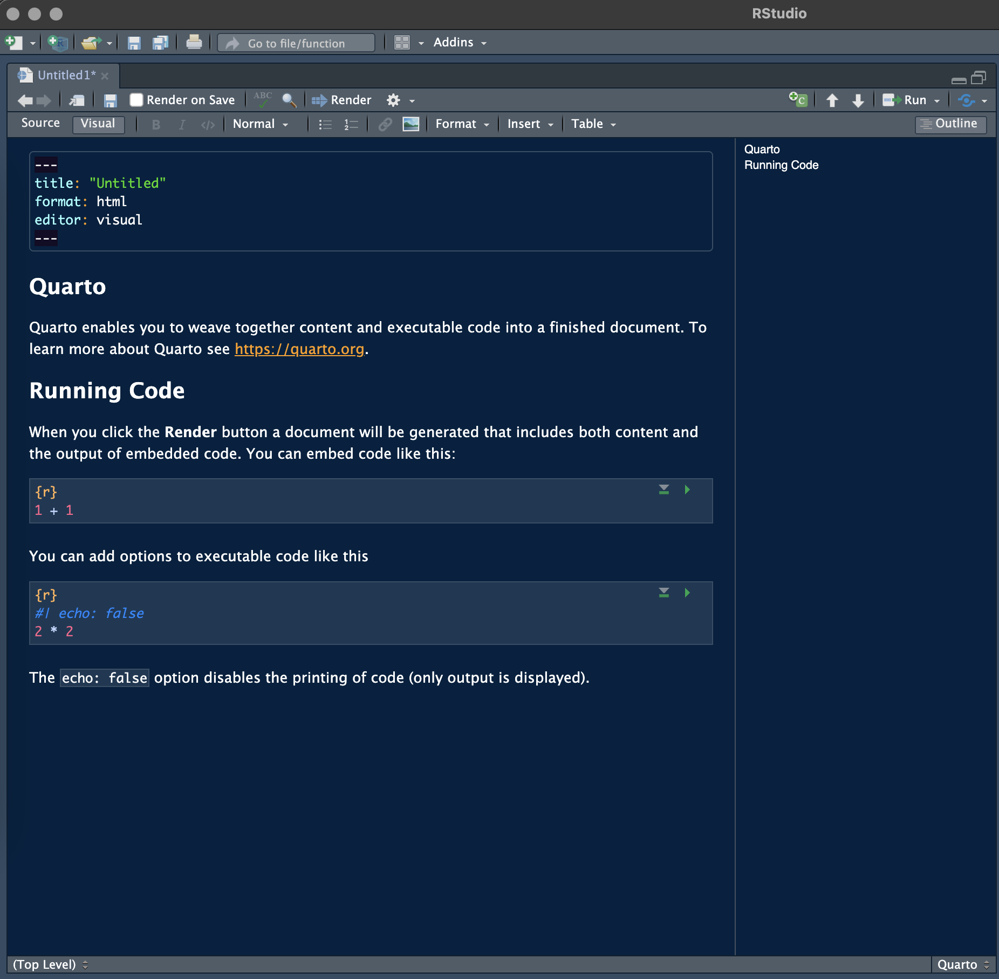
The visual editor is quite similar to what we know from word processing software such as Microsoft Word. I will run you through the features in a quick video.
Further links
- Chapter on Scripts and Projects in R4DS
- More on RStudio Projects on the posit website
- Chapter on Quarto in R4DS
- All things Quarto on its dedicated website
- Yihui Xie published a manual for installing the
tinytexpackage
Exercises
- Create a project for this course.
- Create a Quarto file to work on the exercises. Add the exercises and answer them in code in the document.
- Render it. Does it work?
Reading data into R
Data is typically stored in csv-files and can be read in using readr. For “normal,” comma-separated values read_csv("file_path") suffices. Sometimes, a semicolon is used instead of a comma (e.g., in countries that use the commas as a decimal sign). For these files, read_csv2("file_path) is the way to go.
If you encounter other data types, you just need to find the right tidyverse package to read the data in. Their syntax will be the same, it will just be the function names that differ.
Further links
Exercises
First, download and extract the zip file by clicking the link. Then…
Read them in using the right functions. Specify the parameters properly. Hints can be found in hints.md. Each file should be stored in an object, names should correspond to the file names.
Note: this is challenging, absolutely. If you have problems, try to google the different functions and think about what the different parameters indicate. If that is to no avail, send me an e-mail. I am very happy to provide you further assistance.
Tidy data with tidyr
Before you learn how to tidy and wrangle data, you need to know how you want your data set to actually look like, i.e., what the desired outcome of the entire process of tidying your data set is. The tidyverse is a collection of packages which share an underlying philosophy: they are tidy. This means, that they (preferably) take tidy data as inputs and output tidy data. In the following, I will, first, introduce you to the concept of tidy data as developed by Hadley Wickham (Wickham 2014). Second, tidyr is introduced (Wickham 2020b). Its goal is to provide you with functions that facilitate tidying data sets. Beyond, I will provide you some examples of how to create tibbles using functions from the tibble package (Müller, Wickham, and François 2020). Moreover, the pipe is introduced.
Please note that tidying and cleaning data are not equivalent: I refer to tidying data as to bringing data in a tidy format. Cleaning data, however, can encompass way more than this: parsing columns in the right format (using readr, for instance), imputation of missing values, address the problem of typos, etc.
The concept of tidy data
data sets can be structured in many ways. To make them tidy, they must be organized in the following way (this is taken from the R for Data Science book (Wickham and Grolemund 2016)):
- Each variable must have its own column.
- Each observation must have its own row.
- Each value must have its own cell.
They can even be boiled further down:
- Put each data set in a tibble.
- Put each variable in a column.
This can also be visually depicted:

This way of storing data has two big advantages:
- you can easily access, and hence manipulate, variables as vectors
- if you perform vectorized operations on the tibble, cases are preserved.
Making messy data tidy
So what are the most common problems with data sets? The following list is taken from the tidyr vignette2:
- Column headers are values, not variable names.
- Variables are stored in both rows and columns.
- Multiple variables are stored in one column.
- Multiple types of observational units are stored in the same table.
- A single observational unit is stored in multiple tables.
I will go across the former three types of problems, because the latter two require some more advanced data wrangling techniques you haven’t learned yet (i.e., functions from the dplyr package: select(), mutate(), left_join(), among others).
In the following, I will provide you with examples on how this might look like and how you can address the respective problem using functions from the tidyr package. This will serve as an introduction to the two most important functions of the tidyr package: pivot_longer() and its counterpart pivot_wider(). Beyond that, separate() will be introduced as well. At the beginning of every part, I will build the tibble using functions from the tibble package. This should suffice as a quick refresher for and introduction to creating tibbles.
tidyr has some more functions in stock. They do not necessarily relate to transforming messy data sets into tidy ones, but also serve you well for some general cleaning tasks. They will be introduced, too.
Column headers are values
A data set of this form would look like this:
tibble_value_headers <- tibble(
manufacturer = c("Audi", "BMW", "Mercedes", "Opel", "VW"),
`3 cyl` = sample(20, 5, replace = TRUE),
`4 cyl` = sample(50:100, 5, replace = TRUE),
`5 cyl` = sample(10, 5, replace = TRUE),
`6 cyl` = sample(30:50, 5, replace = TRUE),
`8 cyl` = sample(20:40, 5, replace = TRUE),
`10 cyl` = sample(10, 5, replace = TRUE),
`12 cyl` = sample(20, 5, replace = TRUE),
`16 cyl` = rep(0, 5)
)
tibble_value_headers# A tibble: 5 × 9
manufacturer `3 cyl` `4 cyl` `5 cyl` `6 cyl` `8 cyl` `10 cyl` `12 cyl`
<chr> <int> <int> <int> <int> <int> <int> <int>
1 Audi 2 88 2 41 30 8 1
2 BMW 5 93 9 49 29 8 7
3 Mercedes 2 50 6 49 22 2 8
4 Opel 3 54 3 43 25 10 19
5 VW 4 70 10 35 39 3 19
# ℹ 1 more variable: `16 cyl` <dbl>You can create a tibble by column using the tibble function. Column names need to be specified and linked to vectors of either the same length or length one.
This data set basically consists of three variables: German car manufacturer, number of cylinders, and frequency. To make the data set tidy, it has to consist of three columns depicting the three respective variables. This operation is called pivoting the non-variable columns into two-column key-value pairs. As the data set will thereafter contain fewer columns and more rows than before, it will have become longer (or taller). Hence, the tidyr function is called pivot_longer().
ger_car_manufacturer_longer <- tibble_value_headers |>
pivot_longer(-manufacturer, names_to = "cylinders", values_to = "frequency")
ger_car_manufacturer_longer# A tibble: 40 × 3
manufacturer cylinders frequency
<chr> <chr> <dbl>
1 Audi 3 cyl 2
2 Audi 4 cyl 88
3 Audi 5 cyl 2
4 Audi 6 cyl 41
5 Audi 8 cyl 30
6 Audi 10 cyl 8
7 Audi 12 cyl 1
8 Audi 16 cyl 0
9 BMW 3 cyl 5
10 BMW 4 cyl 93
# ℹ 30 more rowsIn the function call, you need to specify the following: if you were not to use the pipe, the first argument would be the tibble you are manipulating. Then, you look at the column you want to keep. Here, it is the car manufacturer. This means that all columns but manufacturer will be crammed into two new ones: one will contain the columns’ names, the other one their values. How are those new column supposed to be named? That can be specified in the names_to = and values_to =arguments. Please note that you need to provide them a character vector, hence, surround your parameters with quotation marks. As a rule of thumb for all tidyverse packages: If it is a new column name you provide, surround it with quotation marks. If it is one that already exists – like, here, manufacturer, then you do not need the quotation marks.
Variables in both rows and columns
You have this data set:
car_models_fuel <- tribble(
~manufacturer, ~model, ~cylinders, ~fuel_consumption_type, ~fuel_consumption_per_100km,
"VW", "Golf", 4, "urban", 5.2,
"VW", "Golf", 4, "extra urban", 4.5,
"Opel", "Adam", 4, "urban", 4.9,
"Opel", "Adam", 4, "extra urban", 4.1
)
car_models_fuel# A tibble: 4 × 5
manufacturer model cylinders fuel_consumption_type fuel_consumption_per_100km
<chr> <chr> <dbl> <chr> <dbl>
1 VW Golf 4 urban 5.2
2 VW Golf 4 extra urban 4.5
3 Opel Adam 4 urban 4.9
4 Opel Adam 4 extra urban 4.1It was created using the tribble function: tibbles can also be created by row. First, the column names need to be specified by putting a tilde (~) in front of them. Then, you can put in values separated by commas. Please note that the number of values needs to be a multiple of the number of columns.
In this data set, there are basically five variables: manufacturer, model, cylinders, urban fuel consumption, and extra urban fuel consumption. However, the column fuel_consumption_type does not store a variable but the names of two variables. Hence, you need to fix this to make the data set tidy. Because this encompasses reducing the number of rows, the data set becomes wider. The function to achieve this is therefore called pivot_wider() and the inverse of pivot_longer().
car_models_fuel_tidy <- car_models_fuel |>
pivot_wider(
names_from = fuel_consumption_type,
values_from = fuel_consumption_per_100km
)
car_models_fuel_tidy# A tibble: 2 × 5
manufacturer model cylinders urban `extra urban`
<chr> <chr> <dbl> <dbl> <dbl>
1 VW Golf 4 5.2 4.5
2 Opel Adam 4 4.9 4.1Here, you only need to specify the columns you fetch the names and values from. As they both do already exist, you do not need to wrap them in quotation marks.
Multiple variables in one column
Now, however, there is a problem with the cylinders: their number should be depicted in a numeric vector. We could achieve this by either parsing it to a numeric vector:
ger_car_manufacturer_longer$cylinders <- parse_number(ger_car_manufacturer_longer$cylinders)On the other hand, we can also use a handy function from tidyr called separate() and afterwards drop the unnecessary column:
ger_car_manufacturer_longer_sep_cyl <- ger_car_manufacturer_longer |> # first, take the tibble
separate(cylinders, into = c("cylinders", "drop_it"), sep = " ") |> # and then split the column "cylinders" into two
select(-drop_it) # you will learn about this in the lesson on dplyr # and then drop one column from the tibbleWarning: Expected 2 pieces. Missing pieces filled with `NA` in 40 rows [1, 2, 3, 4, 5,
6, 7, 8, 9, 10, 11, 12, 13, 14, 15, 16, 17, 18, 19, 20, ...].If there are two (or actually more) relevant values in one column, you can simply let out the dropping process and easily split them into multiple columns. By default, the sep = argument divides the content by all non-alphanumeric characters (every character that is not a letter, number, or space) it contains.
Please note that the new column is still in character format. We can change this using as.numeric():
ger_car_manufacturer_longer_sep_cyl$cylinders <- as.numeric(ger_car_manufacturer_longer_sep_cyl$cylinders)Furthermore, you might want to sort your data in a different manner. If you want to do this by cylinders, it would look like this:
arrange(ger_car_manufacturer_longer_sep_cyl, cylinders)# A tibble: 40 × 3
manufacturer cylinders frequency
<chr> <dbl> <dbl>
1 Audi 3 2
2 BMW 3 5
3 Mercedes 3 2
4 Opel 3 3
5 VW 3 4
6 Audi 4 88
7 BMW 4 93
8 Mercedes 4 50
9 Opel 4 54
10 VW 4 70
# ℹ 30 more rowsInsertion: the pipe
Have you noticed the |>? That’s the pipe. It can be considered a conjunction in coding. Usually, you will use it when working with tibbles. What it does is pretty straight-forward: it takes what is on its left – the input – and provides it to the function on its right as the first argument. Hence, the code in the last chunk, which looks like this
arrange(ger_car_manufacturer_longer_sep_cyl, cylinders)# A tibble: 40 × 3
manufacturer cylinders frequency
<chr> <dbl> <dbl>
1 Audi 3 2
2 BMW 3 5
3 Mercedes 3 2
4 Opel 3 3
5 VW 3 4
6 Audi 4 88
7 BMW 4 93
8 Mercedes 4 50
9 Opel 4 54
10 VW 4 70
# ℹ 30 more rowscould have also been written like this
ger_car_manufacturer_longer_sep_cyl |> arrange(cylinders)# A tibble: 40 × 3
manufacturer cylinders frequency
<chr> <dbl> <dbl>
1 Audi 3 2
2 BMW 3 5
3 Mercedes 3 2
4 Opel 3 3
5 VW 3 4
6 Audi 4 88
7 BMW 4 93
8 Mercedes 4 50
9 Opel 4 54
10 VW 4 70
# ℹ 30 more rowsbecause the tibble is the first argument in the function call.
Because the pipe (its precedessor was %>%) has really gained traction in the R community, many functions are now optimized for being used with the pipe. However, there are still some around which are not. A function for fitting a basic linear model with one dependent and one independent variable which are both stored in a tibble looks like this: lm(formula = dv ~ iv, data = tibble). Here, the tibble is not the first argument. To be able to fit a linear model in a “pipeline,” you need to employ a little hack: you can use an underscore _ as a placeholder. Here, it is important that the argument is named.
Let’s check out the effect the number of cylinders has on the number of models:
ger_car_manufacturer_longer_sep_cyl |>
lm(frequency ~ cylinders, data = _) |>
summary()
Call:
lm(formula = frequency ~ cylinders, data = ger_car_manufacturer_longer_sep_cyl)
Residuals:
Min 1Q Median 3Q Max
-31.852 -15.302 -0.957 10.285 61.678
Coefficients:
Estimate Std. Error t value Pr(>|t|)
(Intercept) 41.4435 7.7946 5.317 4.91e-06 ***
cylinders -2.5304 0.8647 -2.926 0.00576 **
---
Signif. codes: 0 '***' 0.001 '**' 0.01 '*' 0.05 '.' 0.1 ' ' 1
Residual standard error: 22.71 on 38 degrees of freedom
Multiple R-squared: 0.1839, Adjusted R-squared: 0.1624
F-statistic: 8.563 on 1 and 38 DF, p-value: 0.005762As |> is a bit tedious to type, a shortcut exists: shift-ctrl-m.
Splitting and merging cells
If there are multiple values in one column/cell and you want to split them and put them into two rows instead of columns, tidyr offers you the separate_rows() function.
german_cars_vec <- c(Audi = "A1, A3, A4, A5, A6, A7, A8",
BMW = "1 Series, 2 Series, 3 Series, 4 Series, 5 Series, 6 Series, 7 Series, 8 Series")
german_cars_tbl <- enframe(
german_cars_vec,
name = "brand",
value = "model"
)
german_cars_tbl# A tibble: 2 × 2
brand model
<chr> <chr>
1 Audi A1, A3, A4, A5, A6, A7, A8
2 BMW 1 Series, 2 Series, 3 Series, 4 Series, 5 Series, 6 Series, 7 Series, 8…tidy_german_cars_tbl <- german_cars_tbl |>
separate_rows(model, sep = ", ")enframe() enables you to create a tibble from a (named) vector. It outputs a tibble with two columns (name and value by default): name contains the names of the elements (if the elements are unnamed, it contains a serial number), value the element. Both can be renamed in the function call by providing a character vector.
If you want to achieve the opposite, i.e., merge cells’ content, you can use the counterpart, unite(). Let’s take the following dataframe which consists of the names of the professors of the Institute for Political Science of the University of Regensburg:
professor_names_df <- data.frame(first_name = c("Karlfriedrich", "Martin", "Jerzy", "Stephan", "Melanie"),
last_name = c("Herb", "Sebaldt", "Maćków", "Bierling", "Walter-Rogg"))
professor_names_tbl <- professor_names_df |>
as_tibble() |>
unite(first_name, last_name, col = "name", sep = " ", remove = TRUE, na.rm = FALSE)
professor_names_tbl# A tibble: 5 × 1
name
<chr>
1 Karlfriedrich Herb
2 Martin Sebaldt
3 Jerzy Maćków
4 Stephan Bierling
5 Melanie Walter-Roggunite() takes the tibble it should be applied to as the first argument (not necessary if you use the pipe). Then, it takes the two or more columns as arguments (actually, this is not necessary if you want to unite all columns). col = takes a character vector to specify the name of the resulting, new column. remove = TRUE indicates that the columns that are united are removed as well. You can, of course, set it to false, too. na.rm = FALSE finally indicates that missing values are not to be removed prior to the uniting process.
Here, the final variant of creating tibbles is introduced as well: you can apply the function as_tibble() to a data frame and it will then be transformed into a tibble.
Further links
- Hadley on tidy data
- The two
pivot_*()functions lie at the heart oftidyr. This article from the Northeastern University’s School of Journalism explains it in further detail.
Exercises
Bring the data sets you read into R in the “Reading data in R” section into a tidy format. Store the tidy data sets in a new object, named like the former object plus the suffix “_tidy” – e.g., books_tidy. If no tidying is needed, you do not have to create a new object. The pipe operator should be used to connect the different steps.
Wrangling data with dplyr
The last chapter showed you four things: how you get data sets into R, a couple of ways to create tibbles, how to pass data to functions using the pipe (|>), and an introduction to tidy data and how to make data sets tidy using the tidyr package (Wickham 2020b). What you haven’t learned was how you can actually manipulate the data themselves. In the tidyverse framework (Wickham et al. 2019), the package which enables you to accomplish those tasks is dplyr (Wickham 2020a).
dplyr joined the party in 2014, building upon the plyr package. The d in dplyr stands for data set and dplyr works with tibbles (or data frames) only.
It consists of five main functions, the “verbs”:
arrange()– sort valuesfilter()– pick observationsmutate()– create new variables (columns)select()– select variablessummarize()– create summaries from multiple values
They are joined by group_by(), a function that changes the scope on which entities the functions are applied to.
Furthermore, diverse bind_ functions and _joins enable you to combine multiple tibbles into one. They will be introduced later.
In the following, I will guide you through how you can use the verbs to accomplish whatever goals which require data wrangling you might have.
The data set I will use here consists of the 1,000 most popular movies on IMDb which were published between 2006 and 2016 and some data on them. It was created by PromptCloud and DataStock and published on Kaggle, more information can be found here.
imdb_raw <- read_csv("data/imdb2006-2016.csv")The data set hasn’t been modified by me before. I will show you how I would go across it using a couple of dplyr functions.
select()
select enables you to select columns. Since we are dealing with tidy data, every variable has its own column.
glimpse() provides you with an overview of the data set and its columns.
glimpse(imdb_raw)Rows: 1,000
Columns: 12
$ Rank <dbl> 1, 2, 3, 4, 5, 6, 7, 8, 9, 10, 11, 12, 13, 14, 15…
$ Title <chr> "Guardians of the Galaxy", "Prometheus", "Split",…
$ Genre <chr> "Action,Adventure,Sci-Fi", "Adventure,Mystery,Sci…
$ Description <chr> "A group of intergalactic criminals are forced to…
$ Director <chr> "James Gunn", "Ridley Scott", "M. Night Shyamalan…
$ Actors <chr> "Chris Pratt, Vin Diesel, Bradley Cooper, Zoe Sal…
$ Year <dbl> 2014, 2012, 2016, 2016, 2016, 2016, 2016, 2016, 2…
$ `Runtime (Minutes)` <dbl> 121, 124, 117, 108, 123, 103, 128, 89, 141, 116, …
$ Rating <dbl> 8.1, 7.0, 7.3, 7.2, 6.2, 6.1, 8.3, 6.4, 7.1, 7.0,…
$ Votes <dbl> 757074, 485820, 157606, 60545, 393727, 56036, 258…
$ `Revenue (Millions)` <dbl> 333.13, 126.46, 138.12, 270.32, 325.02, 45.13, 15…
$ Metascore <dbl> 76, 65, 62, 59, 40, 42, 93, 71, 78, 41, 66, 74, 6…The columns I want to keep are: Title, Director, Year, Runtime (Minutes), Rating, Votes, and Revenue (Millions). Furthermore, I want to rename the columns: every column’s name should be in lowercase and a regular name that does not need to be surrounded by back ticks – i.e., a name that only consists of characters, numbers, underscores, or dots.
This can be achieved in a couple of ways:
First, by choosing the columns column by column and subsequently renaming them:
imdb_raw |>
select(Title, Director, Year, `Runtime (Minutes)`, Rating, Votes, `Revenue (Millions)`) |>
rename(title = Title, director = Director, year = Year, runtime = `Runtime (Minutes)`, rating = Rating, votes = Votes, revenue_million = `Revenue (Millions)`) |>
glimpse()Rows: 1,000
Columns: 7
$ title <chr> "Guardians of the Galaxy", "Prometheus", "Split", "Sin…
$ director <chr> "James Gunn", "Ridley Scott", "M. Night Shyamalan", "C…
$ year <dbl> 2014, 2012, 2016, 2016, 2016, 2016, 2016, 2016, 2016, …
$ runtime <dbl> 121, 124, 117, 108, 123, 103, 128, 89, 141, 116, 133, …
$ rating <dbl> 8.1, 7.0, 7.3, 7.2, 6.2, 6.1, 8.3, 6.4, 7.1, 7.0, 7.5,…
$ votes <dbl> 757074, 485820, 157606, 60545, 393727, 56036, 258682, …
$ revenue_million <dbl> 333.13, 126.46, 138.12, 270.32, 325.02, 45.13, 151.06,…Second, the columns can also be chosen vice versa: unnecessary columns can be dropped using a minus:
imdb_raw |>
select(-Rank, -Genre, -Description, -Actors, -Metascore) |>
rename(title = Title, director = Director, year = Year, runtime = `Runtime (Minutes)`, rating = Rating, votes = Votes, revenue_million = `Revenue (Millions)`) |>
glimpse()Rows: 1,000
Columns: 7
$ title <chr> "Guardians of the Galaxy", "Prometheus", "Split", "Sin…
$ director <chr> "James Gunn", "Ridley Scott", "M. Night Shyamalan", "C…
$ year <dbl> 2014, 2012, 2016, 2016, 2016, 2016, 2016, 2016, 2016, …
$ runtime <dbl> 121, 124, 117, 108, 123, 103, 128, 89, 141, 116, 133, …
$ rating <dbl> 8.1, 7.0, 7.3, 7.2, 6.2, 6.1, 8.3, 6.4, 7.1, 7.0, 7.5,…
$ votes <dbl> 757074, 485820, 157606, 60545, 393727, 56036, 258682, …
$ revenue_million <dbl> 333.13, 126.46, 138.12, 270.32, 325.02, 45.13, 151.06,…Columns can also be renamed in the selecting process:
imdb_raw |>
select(title = Title, director = Director, year = Year, runtime = `Runtime (Minutes)`, rating = Rating, votes = Votes, revenue_million = `Revenue (Millions)`) |>
glimpse()Rows: 1,000
Columns: 7
$ title <chr> "Guardians of the Galaxy", "Prometheus", "Split", "Sin…
$ director <chr> "James Gunn", "Ridley Scott", "M. Night Shyamalan", "C…
$ year <dbl> 2014, 2012, 2016, 2016, 2016, 2016, 2016, 2016, 2016, …
$ runtime <dbl> 121, 124, 117, 108, 123, 103, 128, 89, 141, 116, 133, …
$ rating <dbl> 8.1, 7.0, 7.3, 7.2, 6.2, 6.1, 8.3, 6.4, 7.1, 7.0, 7.5,…
$ votes <dbl> 757074, 485820, 157606, 60545, 393727, 56036, 258682, …
$ revenue_million <dbl> 333.13, 126.46, 138.12, 270.32, 325.02, 45.13, 151.06,…You can also make your expressions shorter by using a couple of hacks:
: can be used to select all columns between two:
imdb_raw |>
select(Title, Director, Year:`Revenue (Millions)`) |>
rename(title = Title, director = Director, year = Year, runtime = `Runtime (Minutes)`, rating = Rating, votes = Votes, revenue_million = `Revenue (Millions)`) |>
glimpse()Rows: 1,000
Columns: 7
$ title <chr> "Guardians of the Galaxy", "Prometheus", "Split", "Sin…
$ director <chr> "James Gunn", "Ridley Scott", "M. Night Shyamalan", "C…
$ year <dbl> 2014, 2012, 2016, 2016, 2016, 2016, 2016, 2016, 2016, …
$ runtime <dbl> 121, 124, 117, 108, 123, 103, 128, 89, 141, 116, 133, …
$ rating <dbl> 8.1, 7.0, 7.3, 7.2, 6.2, 6.1, 8.3, 6.4, 7.1, 7.0, 7.5,…
$ votes <dbl> 757074, 485820, 157606, 60545, 393727, 56036, 258682, …
$ revenue_million <dbl> 333.13, 126.46, 138.12, 270.32, 325.02, 45.13, 151.06,…starts_with() select columns whose names start with the same character string:
imdb_selected <- imdb_raw |>
select(Title, Director, Votes, Year, starts_with("R")) |>
select(-Rank) |>
rename(title = Title, director = Director, year = Year, runtime = `Runtime (Minutes)`, rating = Rating, votes = Votes, revenue_million = `Revenue (Millions)`) |>
glimpse()Rows: 1,000
Columns: 7
$ title <chr> "Guardians of the Galaxy", "Prometheus", "Split", "Sin…
$ director <chr> "James Gunn", "Ridley Scott", "M. Night Shyamalan", "C…
$ votes <dbl> 757074, 485820, 157606, 60545, 393727, 56036, 258682, …
$ year <dbl> 2014, 2012, 2016, 2016, 2016, 2016, 2016, 2016, 2016, …
$ runtime <dbl> 121, 124, 117, 108, 123, 103, 128, 89, 141, 116, 133, …
$ rating <dbl> 8.1, 7.0, 7.3, 7.2, 6.2, 6.1, 8.3, 6.4, 7.1, 7.0, 7.5,…
$ revenue_million <dbl> 333.13, 126.46, 138.12, 270.32, 325.02, 45.13, 151.06,…As you may have noticed, the order in the select() matters: columns will be ordered in the same order as they are chosen.
A couple of further shortcuts for select() do exist. An overview can be found in the dplyr cheatsheet.
filter()
Whereas select() enables you to choose variables (i.e., columns), filter() lets you choose observations (i.e., rows).
In this case, I only want movies with a revenue above $100,000,000:
imdb_selected |>
filter(revenue_million > 100) |>
glimpse()Rows: 250
Columns: 7
$ title <chr> "Guardians of the Galaxy", "Prometheus", "Split", "Sin…
$ director <chr> "James Gunn", "Ridley Scott", "M. Night Shyamalan", "C…
$ votes <dbl> 757074, 485820, 157606, 60545, 393727, 258682, 192177,…
$ year <dbl> 2014, 2012, 2016, 2016, 2016, 2016, 2016, 2016, 2016, …
$ runtime <dbl> 121, 124, 117, 108, 123, 128, 116, 133, 127, 133, 107,…
$ rating <dbl> 8.1, 7.0, 7.3, 7.2, 6.2, 8.3, 7.0, 7.5, 7.8, 7.9, 7.7,…
$ revenue_million <dbl> 333.13, 126.46, 138.12, 270.32, 325.02, 151.06, 100.01…Besides, I am especially interested in the director Christopher Nolan. Therefore, I want to look at movies that were directed by him and made more than $100,000,000:
imdb_selected |>
filter(revenue_million > 100 & director == "Christopher Nolan") |>
glimpse()Rows: 4
Columns: 7
$ title <chr> "Interstellar", "The Dark Knight", "Inception", "The D…
$ director <chr> "Christopher Nolan", "Christopher Nolan", "Christopher…
$ votes <dbl> 1047747, 1791916, 1583625, 1222645
$ year <dbl> 2014, 2008, 2010, 2012
$ runtime <dbl> 169, 152, 148, 164
$ rating <dbl> 8.6, 9.0, 8.8, 8.5
$ revenue_million <dbl> 187.99, 533.32, 292.57, 448.13The following overview is taken from the dplyr cheatsheet and shows the operators you can use in filter():

Exemplary application
To demonstrate how a real-world application of this stuff could look like, I will now provide you a brief insight into my private life and how I organize movie nights. JK. You could definitely try this at home and surprise your loved ones with such hot applications. If you are brave and surprise your latest Tinder match with an .RDS file containing suggestions for Netflix&Chill, please let me know what their response looked like.
Tonight, I will hang out with a real nerd. Probably because they (nerds have all kinds of genders) know about my faible for R, they have sent me a vector containing a couple of movies we could watch tonight:
set.seed(123) # guarantees that movie_vec will always be the same thing
movie_vec <- imdb_raw$Title[sample(1000, 10, replace = FALSE)]
movie_vec [1] "Mechanic: Resurrection" "Denial" "The Conjuring 2"
[4] "Birth of the Dragon" "Warrior" "Super"
[7] "127 Hours" "Dangal" "The Infiltrator"
[10] "Maleficent" However, I want to make a more informed decision and decide to obtain some more information on the movies from my IMDb data set:
imdb_selected |>
filter(title %in% movie_vec) |>
glimpse()Rows: 10
Columns: 7
$ title <chr> "Dangal", "The Conjuring 2", "Warrior", "Maleficent", …
$ director <chr> "Nitesh Tiwari", "James Wan", "Gavin O'Connor", "Rober…
$ votes <dbl> 48969, 137203, 355722, 268877, 43929, 48161, 8229, 552…
$ year <dbl> 2016, 2016, 2011, 2014, 2016, 2016, 2016, 2016, 2010, …
$ runtime <dbl> 161, 134, 140, 97, 127, 98, 109, 103, 94, 96
$ rating <dbl> 8.8, 7.4, 8.2, 7.0, 7.1, 5.6, 6.6, 3.9, 7.6, 6.8
$ revenue_million <dbl> 11.15, 102.46, 13.65, 241.41, 15.43, 21.20, 4.07, 93.0…I have convinced them to watch either one of the movies they have suggested or one directed by Christopher Nolan or one with a rating greater or equal to 8.5 and send them back this data set:
imdb_selected |>
filter(title %in% movie_vec | director == "Christopher Nolan" | rating >= 8.5) |>
glimpse()Rows: 21
Columns: 7
$ title <chr> "Interstellar", "The Dark Knight", "The Prestige", "In…
$ director <chr> "Christopher Nolan", "Christopher Nolan", "Christopher…
$ votes <dbl> 1047747, 1791916, 913152, 1583625, 34110, 937414, 4896…
$ year <dbl> 2014, 2008, 2006, 2010, 2016, 2006, 2016, 2012, 2014, …
$ runtime <dbl> 169, 152, 130, 148, 106, 151, 161, 164, 107, 134, 140,…
$ rating <dbl> 8.6, 9.0, 8.5, 8.8, 8.6, 8.5, 8.8, 8.5, 8.5, 7.4, 8.2,…
$ revenue_million <dbl> 187.99, 533.32, 53.08, 292.57, 4.68, 132.37, 11.15, 44…“I deteste ‘Interstellar’,” is the response. “All right,” I say to myself, “I can easily exclude it.”
imdb_selected |>
filter(title %in% movie_vec | director == "Christopher Nolan" | rating >= 8.5 & title != "Interstellar") |> # if you want to negate something, put the ! in front of it
glimpse()Rows: 21
Columns: 7
$ title <chr> "Interstellar", "The Dark Knight", "The Prestige", "In…
$ director <chr> "Christopher Nolan", "Christopher Nolan", "Christopher…
$ votes <dbl> 1047747, 1791916, 913152, 1583625, 34110, 937414, 4896…
$ year <dbl> 2014, 2008, 2006, 2010, 2016, 2006, 2016, 2012, 2014, …
$ runtime <dbl> 169, 152, 130, 148, 106, 151, 161, 164, 107, 134, 140,…
$ rating <dbl> 8.6, 9.0, 8.5, 8.8, 8.6, 8.5, 8.8, 8.5, 8.5, 7.4, 8.2,…
$ revenue_million <dbl> 187.99, 533.32, 53.08, 292.57, 4.68, 132.37, 11.15, 44…Oh, that did not work. I should wrap them in columns:
imdb_selected |>
filter((title %in% movie_vec | director == "Christopher Nolan" | rating >= 8.5) & title != "Interstellar") |>
glimpse()Rows: 20
Columns: 7
$ title <chr> "The Dark Knight", "The Prestige", "Inception", "Kimi …
$ director <chr> "Christopher Nolan", "Christopher Nolan", "Christopher…
$ votes <dbl> 1791916, 913152, 1583625, 34110, 937414, 48969, 122264…
$ year <dbl> 2008, 2006, 2010, 2016, 2006, 2016, 2012, 2014, 2016, …
$ runtime <dbl> 152, 130, 148, 106, 151, 161, 164, 107, 134, 140, 97, …
$ rating <dbl> 9.0, 8.5, 8.8, 8.6, 8.5, 8.8, 8.5, 8.5, 7.4, 8.2, 7.0,…
$ revenue_million <dbl> 533.32, 53.08, 292.57, 4.68, 132.37, 11.15, 448.13, 13…They come up with a new idea: we have a Scottish evening with a movie directed by the Scottish director Gillies MacKinnon:
imdb_selected |>
filter(director == "Gillies MacKinnon") |>
glimpse()Rows: 1
Columns: 7
$ title <chr> "Whisky Galore"
$ director <chr> "Gillies MacKinnon"
$ votes <dbl> 102
$ year <dbl> 2016
$ runtime <dbl> 98
$ rating <dbl> 5
$ revenue_million <dbl> NA“Well, apparently there is a problem in the data set,” I notice. “There is an NA in the revenue column. I should probably have a further look at this.”
imdb_selected |>
filter(is.na(revenue_million)) |>
glimpse()Rows: 128
Columns: 7
$ title <chr> "Mindhorn", "Hounds of Love", "Paris pieds nus", "5- 2…
$ director <chr> "Sean Foley", "Ben Young", "Dominique Abel", "Patrick …
$ votes <dbl> 2490, 1115, 222, 241, 496, 5103, 987, 35870, 149791, 7…
$ year <dbl> 2016, 2016, 2016, 2007, 2016, 2016, 2016, 2016, 2016, …
$ runtime <dbl> 89, 108, 83, 113, 73, 91, 130, 86, 133, 106, 105, 118,…
$ rating <dbl> 6.4, 6.7, 6.8, 7.1, 2.7, 5.6, 3.7, 6.8, 5.9, 7.9, 5.8,…
$ revenue_million <dbl> NA, NA, NA, NA, NA, NA, NA, NA, NA, NA, NA, NA, NA, NA…Well, that’s quite a significant number of NAs. I will need to exclude these cases:
imdb_selected |>
filter(!is.na(revenue_million)) |>
glimpse()Rows: 872
Columns: 7
$ title <chr> "Guardians of the Galaxy", "Prometheus", "Split", "Sin…
$ director <chr> "James Gunn", "Ridley Scott", "M. Night Shyamalan", "C…
$ votes <dbl> 757074, 485820, 157606, 60545, 393727, 56036, 258682, …
$ year <dbl> 2014, 2012, 2016, 2016, 2016, 2016, 2016, 2016, 2016, …
$ runtime <dbl> 121, 124, 117, 108, 123, 103, 128, 141, 116, 133, 127,…
$ rating <dbl> 8.1, 7.0, 7.3, 7.2, 6.2, 6.1, 8.3, 7.1, 7.0, 7.5, 7.8,…
$ revenue_million <dbl> 333.13, 126.46, 138.12, 270.32, 325.02, 45.13, 151.06,…Other possibilities to subset observations
slice() selects rows by positions:
imdb_selected |>
slice(1:10) |>
glimpse()Rows: 10
Columns: 7
$ title <chr> "Guardians of the Galaxy", "Prometheus", "Split", "Sin…
$ director <chr> "James Gunn", "Ridley Scott", "M. Night Shyamalan", "C…
$ votes <dbl> 757074, 485820, 157606, 60545, 393727, 56036, 258682, …
$ year <dbl> 2014, 2012, 2016, 2016, 2016, 2016, 2016, 2016, 2016, …
$ runtime <dbl> 121, 124, 117, 108, 123, 103, 128, 89, 141, 116
$ rating <dbl> 8.1, 7.0, 7.3, 7.2, 6.2, 6.1, 8.3, 6.4, 7.1, 7.0
$ revenue_million <dbl> 333.13, 126.46, 138.12, 270.32, 325.02, 45.13, 151.06,…imdb_selected |>
slice_min(revenue_million, n = 10) |>
glimpse()Rows: 10
Columns: 7
$ title <chr> "A Kind of Murder", "Dead Awake", "Wakefield", "Loveso…
$ director <chr> "Andy Goddard", "Phillip Guzman", "Robin Swicord", "So…
$ votes <dbl> 3305, 523, 291, 616, 80415, 10220, 36091, 54027, 4155,…
$ year <dbl> 2016, 2016, 2016, 2016, 2014, 2015, 2010, 2012, 2015, …
$ runtime <dbl> 95, 99, 106, 84, 102, 101, 98, 95, 93, 110
$ rating <dbl> 5.2, 4.7, 7.5, 6.4, 7.2, 5.9, 6.5, 6.9, 5.6, 5.9
$ revenue_million <dbl> 0.00, 0.01, 0.01, 0.01, 0.01, 0.01, 0.02, 0.02, 0.02, …distinct removes duplicate rows:
imdb_selected |>
distinct(director) |>
glimpse()Rows: 644
Columns: 1
$ director <chr> "James Gunn", "Ridley Scott", "M. Night Shyamalan", "Christop…By default, it will remove all other columns apart from the one(s) you have specified. You can avoid that by setting .keep_all = TRUE:
imdb_selected |>
distinct(title, .keep_all = TRUE) |>
glimpse()Rows: 999
Columns: 7
$ title <chr> "Guardians of the Galaxy", "Prometheus", "Split", "Sin…
$ director <chr> "James Gunn", "Ridley Scott", "M. Night Shyamalan", "C…
$ votes <dbl> 757074, 485820, 157606, 60545, 393727, 56036, 258682, …
$ year <dbl> 2014, 2012, 2016, 2016, 2016, 2016, 2016, 2016, 2016, …
$ runtime <dbl> 121, 124, 117, 108, 123, 103, 128, 89, 141, 116, 133, …
$ rating <dbl> 8.1, 7.0, 7.3, 7.2, 6.2, 6.1, 8.3, 6.4, 7.1, 7.0, 7.5,…
$ revenue_million <dbl> 333.13, 126.46, 138.12, 270.32, 325.02, 45.13, 151.06,…Oh, interesting, there is apparently one movie which is in there twice. How could we find this movie?
mutate()
My data set looks pretty nice already, but one flaw catches the eye: the column revenue_million should probably be converted to revenue. Hence, I need to create a new variable which contains the values from revenue_million multiplied by 1,000,000 and drop the now obsolete revenue_million.
imdb_selected |>
mutate(revenue = revenue_million * 1000000) |>
select(-revenue_million) |>
glimpse()Rows: 1,000
Columns: 7
$ title <chr> "Guardians of the Galaxy", "Prometheus", "Split", "Sing", "Su…
$ director <chr> "James Gunn", "Ridley Scott", "M. Night Shyamalan", "Christop…
$ votes <dbl> 757074, 485820, 157606, 60545, 393727, 56036, 258682, 2490, 7…
$ year <dbl> 2014, 2012, 2016, 2016, 2016, 2016, 2016, 2016, 2016, 2016, 2…
$ runtime <dbl> 121, 124, 117, 108, 123, 103, 128, 89, 141, 116, 133, 127, 13…
$ rating <dbl> 8.1, 7.0, 7.3, 7.2, 6.2, 6.1, 8.3, 6.4, 7.1, 7.0, 7.5, 7.8, 7…
$ revenue <dbl> 333130000, 126460000, 138120000, 270320000, 325020000, 451300…The structure of the mutate() call looks like this: first, you need to provide the name of the new variable. If the variable exists already, it will be replaced. Second, the equal sign tells R what the new variable should contain. Third, a function that outputs a vector which is as long as the tibble has rows or 1.
If we want to drop all other columns and just keep the new one: transmute() drops all the original columns.
imdb_selected |>
transmute(revenue = revenue_million * 1000000) |>
glimpse()Rows: 1,000
Columns: 1
$ revenue <dbl> 333130000, 126460000, 138120000, 270320000, 325020000, 4513000…mutate() uses so-called window functions. They take one vector of values and return another vector of values. An overview – again, from the cheat sheet:
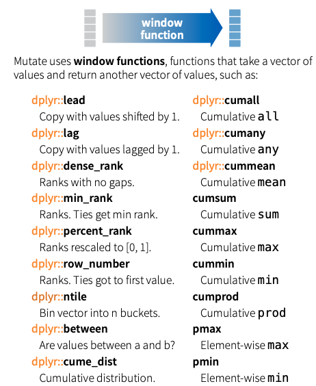
Another feature of dplyr, which is useful in combination with mutate(), is case_when().
case_when() can for instance be used to create binary indicator variables. In this example I want it to be 0 if the movie was made before 2010 and 1 if not. case_when() works like this: first, you provide a condition (e.g., year < 2010). Second, you provide what the output should be if the condition is met (here, 0). Third, you can provide as many conditions as you want. Finally, you can provide a default value using TRUE ~ value. If none of the conditions are met, the default value will be assigned.
imdb_selected |>
mutate(indicator = case_when(year < 2010 ~ 0,
year >= 2010 ~ 1,
TRUE ~ 2)) |>
glimpse()Rows: 1,000
Columns: 8
$ title <chr> "Guardians of the Galaxy", "Prometheus", "Split", "Sin…
$ director <chr> "James Gunn", "Ridley Scott", "M. Night Shyamalan", "C…
$ votes <dbl> 757074, 485820, 157606, 60545, 393727, 56036, 258682, …
$ year <dbl> 2014, 2012, 2016, 2016, 2016, 2016, 2016, 2016, 2016, …
$ runtime <dbl> 121, 124, 117, 108, 123, 103, 128, 89, 141, 116, 133, …
$ rating <dbl> 8.1, 7.0, 7.3, 7.2, 6.2, 6.1, 8.3, 6.4, 7.1, 7.0, 7.5,…
$ revenue_million <dbl> 333.13, 126.46, 138.12, 270.32, 325.02, 45.13, 151.06,…
$ indicator <dbl> 1, 1, 1, 1, 1, 1, 1, 1, 1, 1, 1, 1, 1, 1, 1, 1, 1, 1, …Keep in mind that you can throw any function into mutate() as long as it is vectorized and the output has the same length as the tibble or 1.
case_when() also has a sibling called case_match(). It is used when you want to create a new variable based on the values of a categorical variable. It works similar to case_when(), but instead of providing conditions, you provide the exact values you want to match. case_match() provides a cleaner syntax when you’re matching exact values. It’s particularly useful when you want to recode or map specific values to new ones.
imdb_selected |>
mutate(
# Match specific years to decades
decade = case_match(
year,
2006:2009 ~ "2000s",
2010:2016 ~ "2010s",
.default = "Unknown"
)
) |>
count(decade)# A tibble: 2 × 2
decade n
<chr> <int>
1 2000s 200
2 2010s 800You can also use case_match() with character values:
imdb_selected |>
mutate(
director_type = case_match(
director,
c("Christopher Nolan", "Steven Spielberg", "Martin Scorsese") ~ "Famous",
.default = "Other"
)
) |>
count(director_type)# A tibble: 2 × 2
director_type n
<chr> <int>
1 Famous 14
2 Other 986Key differences between case_when() and case_match():
- Syntax:
case_match()uses the value to match on the left side, whilecase_when()uses conditions - Use case:
case_match()is for exact matching,case_when()is for complex conditions - Performance:
case_match()can be faster for simple value matching - Readability:
case_match()is often cleaner when recoding variables
summarize(), group_by(), and reframe()
When you analyze data, you often want to compare entities according to some sort of summary statistic. This means that you, first, need to split up your data set into certain groups which share one or more characteristics, and, second, collapse the rows together into single-row summaries. The former challenge is accomplished using group_by() whose argument is one or more variables, the latter requires the summarize() function. This function works similar to mutate() but uses summary functions – which take a vector of multiple values and return a single value – instead of window functions – which return a vector of the same length as the input.
Let me provide you an example.
I am interested in the director’s average ratings:
imdb_selected |>
group_by(director, year) |>
summarize(avg_rating = mean(rating),
avg_revenue = mean(revenue_million, na.rm = TRUE))`summarise()` has grouped output by 'director'. You can override using the
`.groups` argument.# A tibble: 987 × 4
# Groups: director [644]
director year avg_rating avg_revenue
<chr> <dbl> <dbl> <dbl>
1 Aamir Khan 2007 8.5 1.2
2 Abdellatif Kechiche 2013 7.8 2.2
3 Adam Leon 2016 6.5 NaN
4 Adam McKay 2006 6.6 148.
5 Adam McKay 2008 6.9 100.
6 Adam McKay 2010 6.7 119.
7 Adam McKay 2015 7.8 70.2
8 Adam Shankman 2007 6.7 119.
9 Adam Shankman 2012 5.9 38.5
10 Adam Wingard 2014 6.7 0.32
# ℹ 977 more rowsIn general, summarize() always works like this: first, you change the scope from the entire tibble to different groups. Then, you calculate your summary. If you then want to further manipulate your data or calculate something else based on the new summary, you need to call ungroup().
You can see the summary functions below:
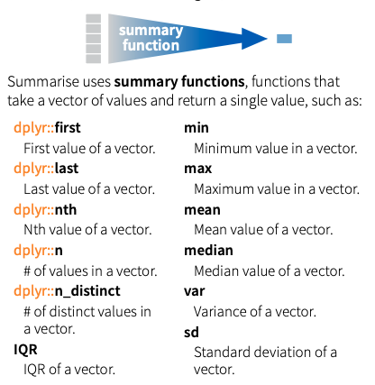
Another handy function akin to this is count(). It counts all occurrences of a singular value in the tibble.
If I were interested in how many movies of the different directors have made it into the data set, I could use this code:
imdb_selected |>
count(director)# A tibble: 644 × 2
director n
<chr> <int>
1 Aamir Khan 1
2 Abdellatif Kechiche 1
3 Adam Leon 1
4 Adam McKay 4
5 Adam Shankman 2
6 Adam Wingard 2
7 Afonso Poyart 1
8 Aisling Walsh 1
9 Akan Satayev 1
10 Akiva Schaffer 1
# ℹ 634 more rowsWhile summarize() is powerful, it has a limitation: it always returns exactly one row per group. Sometimes you need more flexibility - that’s where reframe() comes in. Introduced in dplyr 1.1.0, reframe() allows you to return any number of rows per group.
With reframe(), we can for instance calculate the rating quantiles per director:
imdb_selected |>
group_by(director) |>
reframe(
rating_quantiles = quantile(rating, probs = c(0.25, 0.5, 0.75)),
quantile = rep(c(0.25, 0.5, 0.75))
) |>
ungroup()# A tibble: 1,932 × 3
director rating_quantiles quantile
<chr> <dbl> <dbl>
1 Aamir Khan 8.5 0.25
2 Aamir Khan 8.5 0.5
3 Aamir Khan 8.5 0.75
4 Abdellatif Kechiche 7.8 0.25
5 Abdellatif Kechiche 7.8 0.5
6 Abdellatif Kechiche 7.8 0.75
7 Adam Leon 6.5 0.25
8 Adam Leon 6.5 0.5
9 Adam Leon 6.5 0.75
10 Adam McKay 6.68 0.25
# ℹ 1,922 more rowsThis example calculates the 25th, 50th, and 75th percentiles of ratings. Each director will have one row with their average rating and a list of quantiles.
When to use reframe() vs summarize():
Use summarize() when you want:
- One summary value per group (mean, sum, count, etc.)
- A single row of results per group
Use reframe() when you need:
- Multiple rows per group
- To return quantiles, ranges, or other multi-value summaries
- More flexibility in your output structure
Note that both functions return a grouped tibble, so you may want to ungroup() afterwards if you’re doing further operations.
arrange()
Finally, you can also sort values using arrange(). In the last section, I was interested in directors’ respective average ratings. The values were ordered according to their name (hence, “Aamir Khan” was first). In this case, the order dos not make too much sense, because the first name does not say too much about the director’s ratings. Therefore, I want to sort them according to their average ratings:
imdb_selected |>
group_by(director) |>
summarize(avg_rating = mean(rating)) |>
arrange(avg_rating)# A tibble: 644 × 2
director avg_rating
<chr> <dbl>
1 Jason Friedberg 1.9
2 James Wong 2.7
3 Shawn Burkett 2.7
4 Jonathan Holbrook 3.2
5 Femi Oyeniran 3.5
6 Micheal Bafaro 3.5
7 Jeffrey G. Hunt 3.7
8 Rolfe Kanefsky 3.9
9 Joey Curtis 4
10 Sam Taylor-Johnson 4.1
# ℹ 634 more rowsAll right, Jason Friedberg is apparently the director of the worst rated movie in my data set. But it would be more handy, if they were arranged in descending order. I can use desc() for this:
imdb_selected |>
group_by(director) |>
summarize(avg_rating = mean(rating)) |>
arrange(-avg_rating)# A tibble: 644 × 2
director avg_rating
<chr> <dbl>
1 Nitesh Tiwari 8.8
2 Christopher Nolan 8.68
3 Makoto Shinkai 8.6
4 Olivier Nakache 8.6
5 Aamir Khan 8.5
6 Florian Henckel von Donnersmarck 8.5
7 Damien Chazelle 8.4
8 Naoko Yamada 8.4
9 Amber Tamblyn 8.3
10 Lee Unkrich 8.3
# ℹ 634 more rowsChapeau, Nitesh Tiwari!
Introducing joins
The last session showed you three things: how you get data sets into R, a couple of ways to create tibbles, and an introduction to tidy data and how to make data sets tidy using the tidyr package. As you may recall from the last session, it was not able to solve the last two problems with only the tools tidyr offers. In particular, the problems were:
- Multiple types of observational units are stored in the same table.
- A single observational unit is stored in multiple tables.
Both problems need some different kind of tools: joins. Joins can be used to merge tibbles together. This tutorial, again, builds heavily on the R for Data Science book (Wickham and Grolemund 2016)
Multiple types of units are in the same table
Let’s look at the following data set. It contains the billboard charts in 2000 and was obtained from the tidyr GitHub repo. The example below is taken from the tidyr vignette which can be loaded using vignette("tidy-data", package = "tidyr").
load("data/billboard.rda")glimpse(billboard)Rows: 317
Columns: 79
$ artist <chr> "2 Pac", "2Ge+her", "3 Doors Down", "3 Doors Down", "504 …
$ track <chr> "Baby Don't Cry (Keep...", "The Hardest Part Of ...", "Kr…
$ date.entered <date> 2000-02-26, 2000-09-02, 2000-04-08, 2000-10-21, 2000-04-…
$ wk1 <dbl> 87, 91, 81, 76, 57, 51, 97, 84, 59, 76, 84, 57, 50, 71, 7…
$ wk2 <dbl> 82, 87, 70, 76, 34, 39, 97, 62, 53, 76, 84, 47, 39, 51, 6…
$ wk3 <dbl> 72, 92, 68, 72, 25, 34, 96, 51, 38, 74, 75, 45, 30, 28, 5…
$ wk4 <dbl> 77, NA, 67, 69, 17, 26, 95, 41, 28, 69, 73, 29, 28, 18, 4…
$ wk5 <dbl> 87, NA, 66, 67, 17, 26, 100, 38, 21, 68, 73, 23, 21, 13, …
$ wk6 <dbl> 94, NA, 57, 65, 31, 19, NA, 35, 18, 67, 69, 18, 19, 13, 3…
$ wk7 <dbl> 99, NA, 54, 55, 36, 2, NA, 35, 16, 61, 68, 11, 20, 11, 34…
$ wk8 <dbl> NA, NA, 53, 59, 49, 2, NA, 38, 14, 58, 65, 9, 17, 1, 29, …
$ wk9 <dbl> NA, NA, 51, 62, 53, 3, NA, 38, 12, 57, 73, 9, 17, 1, 27, …
$ wk10 <dbl> NA, NA, 51, 61, 57, 6, NA, 36, 10, 59, 83, 11, 17, 2, 30,…
$ wk11 <dbl> NA, NA, 51, 61, 64, 7, NA, 37, 9, 66, 92, 1, 17, 2, 36, N…
$ wk12 <dbl> NA, NA, 51, 59, 70, 22, NA, 37, 8, 68, NA, 1, 3, 3, 37, N…
$ wk13 <dbl> NA, NA, 47, 61, 75, 29, NA, 38, 6, 61, NA, 1, 3, 3, 39, N…
$ wk14 <dbl> NA, NA, 44, 66, 76, 36, NA, 49, 1, 67, NA, 1, 7, 4, 49, N…
$ wk15 <dbl> NA, NA, 38, 72, 78, 47, NA, 61, 2, 59, NA, 4, 10, 12, 57,…
$ wk16 <dbl> NA, NA, 28, 76, 85, 67, NA, 63, 2, 63, NA, 8, 17, 11, 63,…
$ wk17 <dbl> NA, NA, 22, 75, 92, 66, NA, 62, 2, 67, NA, 12, 25, 13, 65…
$ wk18 <dbl> NA, NA, 18, 67, 96, 84, NA, 67, 2, 71, NA, 22, 29, 15, 68…
$ wk19 <dbl> NA, NA, 18, 73, NA, 93, NA, 83, 3, 79, NA, 23, 29, 18, 79…
$ wk20 <dbl> NA, NA, 14, 70, NA, 94, NA, 86, 4, 89, NA, 43, 40, 20, 86…
$ wk21 <dbl> NA, NA, 12, NA, NA, NA, NA, NA, 5, NA, NA, 44, 43, 30, NA…
$ wk22 <dbl> NA, NA, 7, NA, NA, NA, NA, NA, 5, NA, NA, NA, 50, 40, NA,…
$ wk23 <dbl> NA, NA, 6, NA, NA, NA, NA, NA, 6, NA, NA, NA, NA, 39, NA,…
$ wk24 <dbl> NA, NA, 6, NA, NA, NA, NA, NA, 9, NA, NA, NA, NA, 44, NA,…
$ wk25 <dbl> NA, NA, 6, NA, NA, NA, NA, NA, 13, NA, NA, NA, NA, NA, NA…
$ wk26 <dbl> NA, NA, 5, NA, NA, NA, NA, NA, 14, NA, NA, NA, NA, NA, NA…
$ wk27 <dbl> NA, NA, 5, NA, NA, NA, NA, NA, 16, NA, NA, NA, NA, NA, NA…
$ wk28 <dbl> NA, NA, 4, NA, NA, NA, NA, NA, 23, NA, NA, NA, NA, NA, NA…
$ wk29 <dbl> NA, NA, 4, NA, NA, NA, NA, NA, 22, NA, NA, NA, NA, NA, NA…
$ wk30 <dbl> NA, NA, 4, NA, NA, NA, NA, NA, 33, NA, NA, NA, NA, NA, NA…
$ wk31 <dbl> NA, NA, 4, NA, NA, NA, NA, NA, 36, NA, NA, NA, NA, NA, NA…
$ wk32 <dbl> NA, NA, 3, NA, NA, NA, NA, NA, 43, NA, NA, NA, NA, NA, NA…
$ wk33 <dbl> NA, NA, 3, NA, NA, NA, NA, NA, NA, NA, NA, NA, NA, NA, NA…
$ wk34 <dbl> NA, NA, 3, NA, NA, NA, NA, NA, NA, NA, NA, NA, NA, NA, NA…
$ wk35 <dbl> NA, NA, 4, NA, NA, NA, NA, NA, NA, NA, NA, NA, NA, NA, NA…
$ wk36 <dbl> NA, NA, 5, NA, NA, NA, NA, NA, NA, NA, NA, NA, NA, NA, NA…
$ wk37 <dbl> NA, NA, 5, NA, NA, NA, NA, NA, NA, NA, NA, NA, NA, NA, NA…
$ wk38 <dbl> NA, NA, 9, NA, NA, NA, NA, NA, NA, NA, NA, NA, NA, NA, NA…
$ wk39 <dbl> NA, NA, 9, NA, NA, NA, NA, NA, NA, NA, NA, NA, NA, NA, NA…
$ wk40 <dbl> NA, NA, 15, NA, NA, NA, NA, NA, NA, NA, NA, NA, NA, NA, N…
$ wk41 <dbl> NA, NA, 14, NA, NA, NA, NA, NA, NA, NA, NA, NA, NA, NA, N…
$ wk42 <dbl> NA, NA, 13, NA, NA, NA, NA, NA, NA, NA, NA, NA, NA, NA, N…
$ wk43 <dbl> NA, NA, 14, NA, NA, NA, NA, NA, NA, NA, NA, NA, NA, NA, N…
$ wk44 <dbl> NA, NA, 16, NA, NA, NA, NA, NA, NA, NA, NA, NA, NA, NA, N…
$ wk45 <dbl> NA, NA, 17, NA, NA, NA, NA, NA, NA, NA, NA, NA, NA, NA, N…
$ wk46 <dbl> NA, NA, 21, NA, NA, NA, NA, NA, NA, NA, NA, NA, NA, NA, N…
$ wk47 <dbl> NA, NA, 22, NA, NA, NA, NA, NA, NA, NA, NA, NA, NA, NA, N…
$ wk48 <dbl> NA, NA, 24, NA, NA, NA, NA, NA, NA, NA, NA, NA, NA, NA, N…
$ wk49 <dbl> NA, NA, 28, NA, NA, NA, NA, NA, NA, NA, NA, NA, NA, NA, N…
$ wk50 <dbl> NA, NA, 33, NA, NA, NA, NA, NA, NA, NA, NA, NA, NA, NA, N…
$ wk51 <dbl> NA, NA, 42, NA, NA, NA, NA, NA, NA, NA, NA, NA, NA, NA, N…
$ wk52 <dbl> NA, NA, 42, NA, NA, NA, NA, NA, NA, NA, NA, NA, NA, NA, N…
$ wk53 <dbl> NA, NA, 49, NA, NA, NA, NA, NA, NA, NA, NA, NA, NA, NA, N…
$ wk54 <dbl> NA, NA, NA, NA, NA, NA, NA, NA, NA, NA, NA, NA, NA, NA, N…
$ wk55 <dbl> NA, NA, NA, NA, NA, NA, NA, NA, NA, NA, NA, NA, NA, NA, N…
$ wk56 <dbl> NA, NA, NA, NA, NA, NA, NA, NA, NA, NA, NA, NA, NA, NA, N…
$ wk57 <dbl> NA, NA, NA, NA, NA, NA, NA, NA, NA, NA, NA, NA, NA, NA, N…
$ wk58 <dbl> NA, NA, NA, NA, NA, NA, NA, NA, NA, NA, NA, NA, NA, NA, N…
$ wk59 <dbl> NA, NA, NA, NA, NA, NA, NA, NA, NA, NA, NA, NA, NA, NA, N…
$ wk60 <dbl> NA, NA, NA, NA, NA, NA, NA, NA, NA, NA, NA, NA, NA, NA, N…
$ wk61 <dbl> NA, NA, NA, NA, NA, NA, NA, NA, NA, NA, NA, NA, NA, NA, N…
$ wk62 <dbl> NA, NA, NA, NA, NA, NA, NA, NA, NA, NA, NA, NA, NA, NA, N…
$ wk63 <dbl> NA, NA, NA, NA, NA, NA, NA, NA, NA, NA, NA, NA, NA, NA, N…
$ wk64 <dbl> NA, NA, NA, NA, NA, NA, NA, NA, NA, NA, NA, NA, NA, NA, N…
$ wk65 <dbl> NA, NA, NA, NA, NA, NA, NA, NA, NA, NA, NA, NA, NA, NA, N…
$ wk66 <lgl> NA, NA, NA, NA, NA, NA, NA, NA, NA, NA, NA, NA, NA, NA, N…
$ wk67 <lgl> NA, NA, NA, NA, NA, NA, NA, NA, NA, NA, NA, NA, NA, NA, N…
$ wk68 <lgl> NA, NA, NA, NA, NA, NA, NA, NA, NA, NA, NA, NA, NA, NA, N…
$ wk69 <lgl> NA, NA, NA, NA, NA, NA, NA, NA, NA, NA, NA, NA, NA, NA, N…
$ wk70 <lgl> NA, NA, NA, NA, NA, NA, NA, NA, NA, NA, NA, NA, NA, NA, N…
$ wk71 <lgl> NA, NA, NA, NA, NA, NA, NA, NA, NA, NA, NA, NA, NA, NA, N…
$ wk72 <lgl> NA, NA, NA, NA, NA, NA, NA, NA, NA, NA, NA, NA, NA, NA, N…
$ wk73 <lgl> NA, NA, NA, NA, NA, NA, NA, NA, NA, NA, NA, NA, NA, NA, N…
$ wk74 <lgl> NA, NA, NA, NA, NA, NA, NA, NA, NA, NA, NA, NA, NA, NA, N…
$ wk75 <lgl> NA, NA, NA, NA, NA, NA, NA, NA, NA, NA, NA, NA, NA, NA, N…
$ wk76 <lgl> NA, NA, NA, NA, NA, NA, NA, NA, NA, NA, NA, NA, NA, NA, N…Here, you can immediately see the problem: it contains two types of observations: songs and ranks. Hence, the data set needs to be split up. However, there should be a pointer from the rank data set to the song data set. First, I add an ID column to song_tbl. Then, I can add it to rank_tbl and drop the unnecessary columns which contain the name of the artist and the track.
song_tbl <- billboard |>
rowid_to_column("song_id") |>
distinct(artist, track, .keep_all = TRUE) |>
select(song_id:track)
glimpse(song_tbl)Rows: 317
Columns: 3
$ song_id <int> 1, 2, 3, 4, 5, 6, 7, 8, 9, 10, 11, 12, 13, 14, 15, 16, 17, 18,…
$ artist <chr> "2 Pac", "2Ge+her", "3 Doors Down", "3 Doors Down", "504 Boyz"…
$ track <chr> "Baby Don't Cry (Keep...", "The Hardest Part Of ...", "Krypton…rank_tbl <- billboard |>
pivot_longer(cols = starts_with("wk"),
names_to = "week",
names_prefix = "wk",
values_to = "rank") |>
mutate(week = as.numeric(week),
date = date.entered + (week-1) * 7) |>
drop_na() |>
left_join(song_tbl, by = c("artist", "track")) |>
select(song_id, date, week, rank)
glimpse(rank_tbl)Rows: 5,307
Columns: 4
$ song_id <int> 1, 1, 1, 1, 1, 1, 1, 2, 2, 2, 3, 3, 3, 3, 3, 3, 3, 3, 3, 3, 3,…
$ date <date> 2000-02-26, 2000-03-04, 2000-03-11, 2000-03-18, 2000-03-25, 2…
$ week <dbl> 1, 2, 3, 4, 5, 6, 7, 1, 2, 3, 1, 2, 3, 4, 5, 6, 7, 8, 9, 10, 1…
$ rank <dbl> 87, 82, 72, 77, 87, 94, 99, 91, 87, 92, 81, 70, 68, 67, 66, 57…One unit is in multiple tables
For this example, I have split up a data set from the socviz package containing data on the 2016 elections in the U.S. according to census region and stored them in a folder. I can scrape the file names in the folder and read it into a list in an automated manner. (Note that the functions used to read the files in in an automated fashion are beyond the scope of this course. They come from the fs (Hester, Wickham, and Csárdi 2021) and the purrr package (Henry and Wickham 2020).)3
file_list <- dir_ls(path = "data/socviz_us") |>
map(read_csv,
col_types = cols(
id = col_double(),
name = col_character(),
state = col_character(),
census_region = col_character(),
pop_dens = col_character(),
pop_dens4 = col_character(),
pop_dens6 = col_character(),
pct_black = col_character(),
pop = col_double(),
female = col_double(),
white = col_double(),
black = col_double(),
travel_time = col_double(),
land_area = col_double(),
hh_income = col_double(),
su_gun4 = col_character(),
su_gun6 = col_character(),
fips = col_double(),
votes_dem_2016 = col_double(),
votes_gop_2016 = col_double(),
total_votes_2016 = col_double(),
per_dem_2016 = col_double(),
per_gop_2016 = col_double(),
diff_2016 = col_double(),
per_dem_2012 = col_double(),
per_gop_2012 = col_double(),
diff_2012 = col_double(),
winner = col_character(),
partywinner16 = col_character(),
winner12 = col_character(),
partywinner12 = col_character(),
flipped = col_character()
))The list now consists of four tibbles in a list which need to be bound together. You can achieve this using list_rbind(). Its counterpart is list_cbind() which binds columns together. It matches rows by position.
election_data <- file_list |> list_rbind()
glimpse(election_data)Rows: 3,141
Columns: 32
$ id <dbl> 17001, 17003, 17005, 17007, 17009, 17011, 17013, 1701…
$ name <chr> "Adams County", "Alexander County", "Bond County", "B…
$ state <chr> "IL", "IL", "IL", "IL", "IL", "IL", "IL", "IL", "IL",…
$ census_region <chr> "Midwest", "Midwest", "Midwest", "Midwest", "Midwest"…
$ pop_dens <chr> "[ 50, 100)", "[ 10, 50)", "[ 10, 50)", "[…
$ pop_dens4 <chr> "[ 45, 118)", "[ 17, 45)", "[ 45, 118)", "[118,71…
$ pop_dens6 <chr> "[ 45, 82)", "[ 25, 45)", "[ 45, 82)", "[ 82, …
$ pct_black <chr> "[ 2.0, 5.0)", "[25.0,50.0)", "[ 5.0,10.0)", "[ 2.0, …
$ pop <dbl> 66988, 7492, 17269, 53869, 6832, 33840, 4956, 14715, …
$ female <dbl> 51.3, 49.5, 47.5, 50.2, 35.5, 51.0, 49.7, 50.1, 49.1,…
$ white <dbl> 93.7, 60.6, 90.9, 93.2, 78.6, 96.8, 98.8, 96.7, 93.2,…
$ black <dbl> 3.7, 36.1, 6.5, 2.6, 19.1, 0.8, 0.3, 1.1, 4.4, 12.8, …
$ travel_time <dbl> 16.6, 25.6, 23.6, 30.1, 18.9, 20.4, 39.6, 23.8, 22.2,…
$ land_area <dbl> 855.20, 235.51, 380.28, 280.72, 305.61, 869.03, 253.8…
$ hh_income <dbl> 45073, 26972, 48163, 60893, 42194, 48977, 50436, 4798…
$ su_gun4 <chr> "[ 0, 5)", "[ 5, 8)", "[ 0, 5)", "[ 0, 5)", "[ 0, 5)"…
$ su_gun6 <chr> "[ 4, 7)", "[ 7, 8)", "[ 4, 7)", "[ 0, 4)", "[ 0, 4)"…
$ fips <dbl> 17001, 17003, 17005, 17007, 17009, 17011, 17013, 1701…
$ votes_dem_2016 <dbl> 7633, 1262, 2066, 8952, 475, 6010, 739, 2437, 1617, 4…
$ votes_gop_2016 <dbl> 22732, 1496, 4884, 12261, 1776, 9264, 1719, 4428, 321…
$ total_votes_2016 <dbl> 31770, 2820, 7462, 22604, 2336, 16303, 2556, 7354, 50…
$ per_dem_2016 <dbl> 0.2402581, 0.4475177, 0.2768695, 0.3960361, 0.2033390…
$ per_gop_2016 <dbl> 0.7155178, 0.5304965, 0.6545162, 0.5424261, 0.7602740…
$ diff_2016 <dbl> 15099, 234, 2818, 3309, 1301, 3254, 980, 1991, 1599, …
$ per_dem_2012 <dbl> 0.3152466, 0.5610873, 0.4122471, 0.4625697, 0.3331922…
$ per_gop_2012 <dbl> 0.6670705, 0.4248927, 0.5591853, 0.5195706, 0.6397121…
$ diff_2012 <dbl> 10744, 476, 1075, 1216, 724, 33, 360, 107, 657, 5292,…
$ winner <chr> "Trump", "Trump", "Trump", "Trump", "Trump", "Trump",…
$ partywinner16 <chr> "Republican", "Republican", "Republican", "Republican…
$ winner12 <chr> "Romney", "Obama", "Romney", "Romney", "Romney", "Rom…
$ partywinner12 <chr> "Republican", "Democrat", "Republican", "Republican",…
$ flipped <chr> "No", "Yes", "No", "No", "No", "No", "No", "Yes", "No…However, the topic of this script is different joins. The dplyr package offers six different joins: left_join(), right_join(), inner_join(), full_join(), semi_join(), and anti_join(). The former four are mutating joins, they add columns. The latter two can be used to filter rows in a data set. Below is an overview from the dplyr cheat sheet:

In the following, I will illustrate this using the election data. I split up the data set into three: data on the elections 2016 and 2012, and demographic data. The column they have in common is the county’s respective name.
election_data16 <- election_data |>
select(name, state, votes_dem_2016:diff_2016, winner, partywinner16)
election_data12 <- election_data |>
select(name, state, per_dem_2012:partywinner12)
demographic_data <- election_data |>
select(name, state, pop:hh_income) |>
slice(1:2000) #you will see later why I do thisleft_join() and right_join()
If we want to add the demographic data to the election data 2016, we can use a left_join() or a right_join(). The former adds all columns of y to x, the latter all columns of x to y. Here, I want to add the demographic data to the election data 2016. Therefore, I use a left_join():
election_data16 |>
left_join(demographic_data)Joining with `by = join_by(name, state)`# A tibble: 3,141 × 17
name state votes_dem_2016 votes_gop_2016 total_votes_2016 per_dem_2016
<chr> <chr> <dbl> <dbl> <dbl> <dbl>
1 Adams Coun… IL 7633 22732 31770 0.240
2 Alexander … IL 1262 1496 2820 0.448
3 Bond County IL 2066 4884 7462 0.277
4 Boone Coun… IL 8952 12261 22604 0.396
5 Brown Coun… IL 475 1776 2336 0.203
6 Bureau Cou… IL 6010 9264 16303 0.369
7 Calhoun Co… IL 739 1719 2556 0.289
8 Carroll Co… IL 2437 4428 7354 0.331
9 Cass County IL 1617 3216 5054 0.320
10 Champaign … IL 49694 33235 89196 0.557
# ℹ 3,131 more rows
# ℹ 11 more variables: per_gop_2016 <dbl>, diff_2016 <dbl>, winner <chr>,
# partywinner16 <chr>, pop <dbl>, female <dbl>, white <dbl>, black <dbl>,
# travel_time <dbl>, land_area <dbl>, hh_income <dbl>If the column that both data sets have in common has the same name, there’s no need to provide it. If this is not the case, you need to provide it in a character vector:
election_data16 |>
rename(county = name) |>
right_join(demographic_data, by = join_by("county" == "name"))Warning in right_join(rename(election_data16, county = name), demographic_data, : Detected an unexpected many-to-many relationship between `x` and `y`.
ℹ Row 1 of `x` matches multiple rows in `y`.
ℹ Row 1 of `y` matches multiple rows in `x`.
ℹ If a many-to-many relationship is expected, set `relationship =
"many-to-many"` to silence this warning.# A tibble: 10,348 × 18
county state.x votes_dem_2016 votes_gop_2016 total_votes_2016 per_dem_2016
<chr> <chr> <dbl> <dbl> <dbl> <dbl>
1 Adams Co… IL 7633 22732 31770 0.240
2 Adams Co… IL 7633 22732 31770 0.240
3 Adams Co… IL 7633 22732 31770 0.240
4 Adams Co… IL 7633 22732 31770 0.240
5 Adams Co… IL 7633 22732 31770 0.240
6 Adams Co… IL 7633 22732 31770 0.240
7 Adams Co… IL 7633 22732 31770 0.240
8 Adams Co… IL 7633 22732 31770 0.240
9 Adams Co… IL 7633 22732 31770 0.240
10 Alexande… IL 1262 1496 2820 0.448
# ℹ 10,338 more rows
# ℹ 12 more variables: per_gop_2016 <dbl>, diff_2016 <dbl>, winner <chr>,
# partywinner16 <chr>, state.y <chr>, pop <dbl>, female <dbl>, white <dbl>,
# black <dbl>, travel_time <dbl>, land_area <dbl>, hh_income <dbl>Here, the problem is that the same counties exist in different states. Therefore, all combinations are returned. Hence, I need to specify two arguments: the county’s name and state.
election_data16 |>
rename(county = name) |>
right_join(demographic_data, by = join_by("county" == "name", "state"))# A tibble: 2,000 × 17
county state votes_dem_2016 votes_gop_2016 total_votes_2016 per_dem_2016
<chr> <chr> <dbl> <dbl> <dbl> <dbl>
1 Adams Coun… IL 7633 22732 31770 0.240
2 Alexander … IL 1262 1496 2820 0.448
3 Bond County IL 2066 4884 7462 0.277
4 Boone Coun… IL 8952 12261 22604 0.396
5 Brown Coun… IL 475 1776 2336 0.203
6 Bureau Cou… IL 6010 9264 16303 0.369
7 Calhoun Co… IL 739 1719 2556 0.289
8 Carroll Co… IL 2437 4428 7354 0.331
9 Cass County IL 1617 3216 5054 0.320
10 Champaign … IL 49694 33235 89196 0.557
# ℹ 1,990 more rows
# ℹ 11 more variables: per_gop_2016 <dbl>, diff_2016 <dbl>, winner <chr>,
# partywinner16 <chr>, pop <dbl>, female <dbl>, white <dbl>, black <dbl>,
# travel_time <dbl>, land_area <dbl>, hh_income <dbl>Left joins return all rows which are in x. If a column is in x but not in y, an NA will be included at this position. Right joins work vice versa and return all rows which are in y.
inner_join()
An inner_join() returns all rows which are in x and y.
election_data16 |>
inner_join(demographic_data)Joining with `by = join_by(name, state)`# A tibble: 2,000 × 17
name state votes_dem_2016 votes_gop_2016 total_votes_2016 per_dem_2016
<chr> <chr> <dbl> <dbl> <dbl> <dbl>
1 Adams Coun… IL 7633 22732 31770 0.240
2 Alexander … IL 1262 1496 2820 0.448
3 Bond County IL 2066 4884 7462 0.277
4 Boone Coun… IL 8952 12261 22604 0.396
5 Brown Coun… IL 475 1776 2336 0.203
6 Bureau Cou… IL 6010 9264 16303 0.369
7 Calhoun Co… IL 739 1719 2556 0.289
8 Carroll Co… IL 2437 4428 7354 0.331
9 Cass County IL 1617 3216 5054 0.320
10 Champaign … IL 49694 33235 89196 0.557
# ℹ 1,990 more rows
# ℹ 11 more variables: per_gop_2016 <dbl>, diff_2016 <dbl>, winner <chr>,
# partywinner16 <chr>, pop <dbl>, female <dbl>, white <dbl>, black <dbl>,
# travel_time <dbl>, land_area <dbl>, hh_income <dbl>full_join()
A full_join() returns rows and columns from both x and y.
election_data16 |>
full_join(demographic_data)Joining with `by = join_by(name, state)`# A tibble: 3,141 × 17
name state votes_dem_2016 votes_gop_2016 total_votes_2016 per_dem_2016
<chr> <chr> <dbl> <dbl> <dbl> <dbl>
1 Adams Coun… IL 7633 22732 31770 0.240
2 Alexander … IL 1262 1496 2820 0.448
3 Bond County IL 2066 4884 7462 0.277
4 Boone Coun… IL 8952 12261 22604 0.396
5 Brown Coun… IL 475 1776 2336 0.203
6 Bureau Cou… IL 6010 9264 16303 0.369
7 Calhoun Co… IL 739 1719 2556 0.289
8 Carroll Co… IL 2437 4428 7354 0.331
9 Cass County IL 1617 3216 5054 0.320
10 Champaign … IL 49694 33235 89196 0.557
# ℹ 3,131 more rows
# ℹ 11 more variables: per_gop_2016 <dbl>, diff_2016 <dbl>, winner <chr>,
# partywinner16 <chr>, pop <dbl>, female <dbl>, white <dbl>, black <dbl>,
# travel_time <dbl>, land_area <dbl>, hh_income <dbl>semi_join()
Filtering joins only keep the cases from x, no data set is added.
The semi_join() returns all rows from x with matching values in y. You can compare it to a right_join() but without adding the columns of y.
election_data16 |>
semi_join(demographic_data)Joining with `by = join_by(name, state)`# A tibble: 2,000 × 10
name state votes_dem_2016 votes_gop_2016 total_votes_2016 per_dem_2016
<chr> <chr> <dbl> <dbl> <dbl> <dbl>
1 Adams Coun… IL 7633 22732 31770 0.240
2 Alexander … IL 1262 1496 2820 0.448
3 Bond County IL 2066 4884 7462 0.277
4 Boone Coun… IL 8952 12261 22604 0.396
5 Brown Coun… IL 475 1776 2336 0.203
6 Bureau Cou… IL 6010 9264 16303 0.369
7 Calhoun Co… IL 739 1719 2556 0.289
8 Carroll Co… IL 2437 4428 7354 0.331
9 Cass County IL 1617 3216 5054 0.320
10 Champaign … IL 49694 33235 89196 0.557
# ℹ 1,990 more rows
# ℹ 4 more variables: per_gop_2016 <dbl>, diff_2016 <dbl>, winner <chr>,
# partywinner16 <chr>anti_join()
anti_join() returns all rows from x with no matching rows in y.
election_data16 |>
anti_join(demographic_data)Joining with `by = join_by(name, state)`# A tibble: 1,141 × 10
name state votes_dem_2016 votes_gop_2016 total_votes_2016 per_dem_2016
<chr> <chr> <dbl> <dbl> <dbl> <dbl>
1 Onslow Cou… NC 17156 36342 55364 0.310
2 Orange Cou… NC 59105 18373 79830 0.740
3 Pamlico Co… NC 2427 4225 6772 0.358
4 Pasquotank… NC 8455 8082 16964 0.498
5 Pender Cou… NC 9086 17317 27072 0.336
6 Perquimans… NC 2291 4143 6595 0.347
7 Person Cou… NC 7772 11116 19303 0.403
8 Pitt County NC 40967 35191 78264 0.523
9 Polk County NC 3715 6738 10723 0.346
10 Randolph C… NC 13074 49156 63615 0.206
# ℹ 1,131 more rows
# ℹ 4 more variables: per_gop_2016 <dbl>, diff_2016 <dbl>, winner <chr>,
# partywinner16 <chr>bind_rows() and bind_cols()
Binding tibbles together is made easy using the bind_*() functions. bind_rows() binds them together by rows, bind_cols() by columns. For the former, it is important that column names are matching. Otherwise, the non-matching ones will be added as separate columns and NAs introduced. IDs can be added by using the .id = argument, where the name of the id column can be specified.
election_data16 |>
semi_join(demographic_data) |>
bind_rows(election_data16 |>
anti_join(demographic_data),
.id = "id")Joining with `by = join_by(name, state)`
Joining with `by = join_by(name, state)`# A tibble: 3,141 × 11
id name state votes_dem_2016 votes_gop_2016 total_votes_2016 per_dem_2016
<chr> <chr> <chr> <dbl> <dbl> <dbl> <dbl>
1 1 Adam… IL 7633 22732 31770 0.240
2 1 Alex… IL 1262 1496 2820 0.448
3 1 Bond… IL 2066 4884 7462 0.277
4 1 Boon… IL 8952 12261 22604 0.396
5 1 Brow… IL 475 1776 2336 0.203
6 1 Bure… IL 6010 9264 16303 0.369
7 1 Calh… IL 739 1719 2556 0.289
8 1 Carr… IL 2437 4428 7354 0.331
9 1 Cass… IL 1617 3216 5054 0.320
10 1 Cham… IL 49694 33235 89196 0.557
# ℹ 3,131 more rows
# ℹ 4 more variables: per_gop_2016 <dbl>, diff_2016 <dbl>, winner <chr>,
# partywinner16 <chr>For bind_cols(), the length has to be the same. Duplicated column names will be changed.
election_data12 |> bind_cols(election_data16)New names:
• `name` -> `name...1`
• `state` -> `state...2`
• `winner` -> `winner...6`
• `partywinner16` -> `partywinner16...7`
• `name` -> `name...10`
• `state` -> `state...11`
• `winner` -> `winner...18`
• `partywinner16` -> `partywinner16...19`# A tibble: 3,141 × 19
name...1 state...2 per_dem_2012 per_gop_2012 diff_2012 winner...6
<chr> <chr> <dbl> <dbl> <dbl> <chr>
1 Adams County IL 0.315 0.667 10744 Trump
2 Alexander County IL 0.561 0.425 476 Trump
3 Bond County IL 0.412 0.559 1075 Trump
4 Boone County IL 0.463 0.520 1216 Trump
5 Brown County IL 0.333 0.640 724 Trump
6 Bureau County IL 0.489 0.491 33 Trump
7 Calhoun County IL 0.419 0.559 360 Trump
8 Carroll County IL 0.496 0.482 107 Trump
9 Cass County IL 0.422 0.557 657 Trump
10 Champaign County IL 0.520 0.452 5292 Clinton
# ℹ 3,131 more rows
# ℹ 13 more variables: partywinner16...7 <chr>, winner12 <chr>,
# partywinner12 <chr>, name...10 <chr>, state...11 <chr>,
# votes_dem_2016 <dbl>, votes_gop_2016 <dbl>, total_votes_2016 <dbl>,
# per_dem_2016 <dbl>, per_gop_2016 <dbl>, diff_2016 <dbl>, winner...18 <chr>,
# partywinner16...19 <chr>Further links
- Chapter in R4DS
- More on window functions in the vignette:
vignette("window-functions") - Again, the cheatsheet
- A tutorial on YouTube
- Another introduction can be found here.
- The chapter in R4DS has some nice diagrams.
- You can also consult the
introversepackage if you need help with the packages covered here –introverse::show_topics("dplyr")will give you an overview ofdplyr’s functions, andget_help("name of function")will help you with the respective function.
Exercises
Open the IMDb file.
- Find the duplicated movie. How could you go across this?
- Which director has made the longest movie?
- What’s the highest ranked movie?
- Which movie got the most votes?
- Which movie had the biggest revenue in 2016?
- How much revenue did the movies in the data set make each year in total?
- Filter movies following some conditions:
- More runtime than the average runtime (hint: you could also use
mutate()before). - Movies directed by J. J. Abrams.
- More votes than the median of all of the votes.
- The movies which have the most common value (the mode) in terms of rating (
mode()does exist but will not work in the way you might like it to work – run the script below and use themy_modefunction).
- More runtime than the average runtime (hint: you could also use
## helper function for mode
my_mode <- function(x){
ta = table(x)
tam = max(ta)
if (all(ta == tam))
mod = NA
else
if(is.numeric(x))
mod = as.numeric(names(ta)[ta == tam])
else
mod = names(ta)[ta == tam]
return(mod)
}Visualizations with ggplot2
“The purpose of visualization is insight, not pictures.” – Ben A. Shneiderman
In R, the dominant package for visualizing data is ggplot2 which belongs to the tidyverse.
The “layered grammar of graphics”
ggplot2 works with tibbles and the data needs to be in a tidy format. It builds graphics using “the layered grammar of graphics.” (Wickham 2010)
publishers <- read_csv("data/publishers_with_places.csv")
publishers_filtered <- publishers |>
group_by(city) |>
filter(n() > 5) |>
drop_na()This implies that you start with a base layer – the initial ggplot2 call.
publishers_filtered |>
ggplot()
The initial call produces an empty coordinate system. It can be filled with additional layers.
ggplot(data = publishers_filtered) +
geom_bar(aes(x = city)) 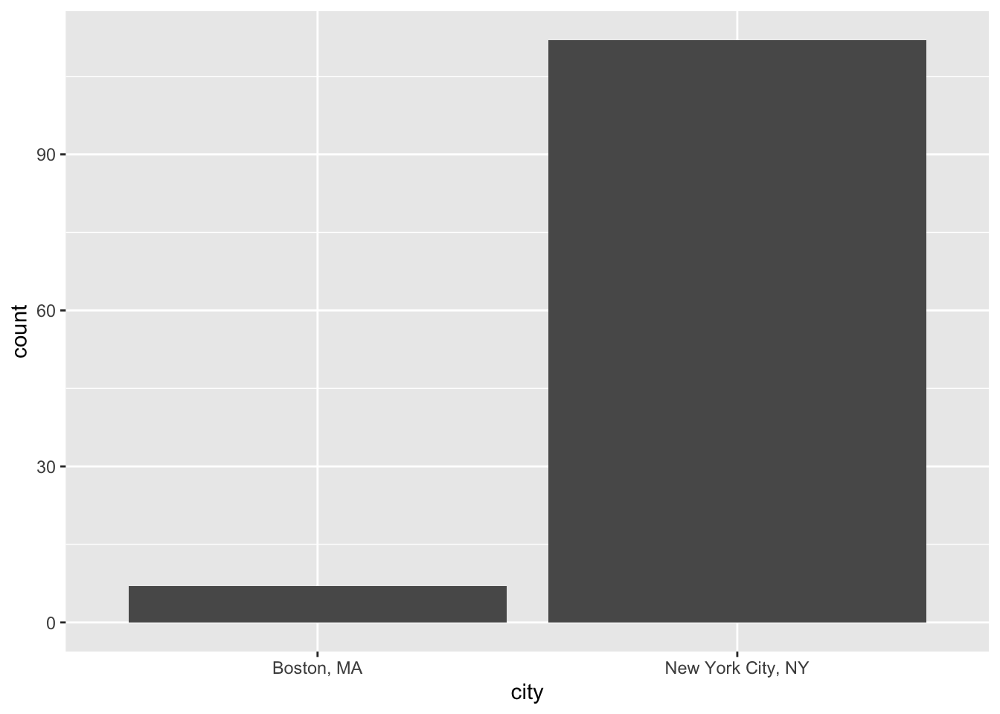
Unlike the remainder of the tidyverse, ggplot2 uses a + instead of the pipe |>. If you use the pipe by accident, it will not work and an (informative) error message will appear.
# ggplot(data = publishers_filtered) |>
# geom_bar(aes(x = city)) The layers
In general, a call looks like this:
As you might have seen above, I provided the data in the initial ggplot call. Then, when I added the layer – the geom_bar() for a bar plot – I had to provide the mapping – which variables I wanted to plot – using aes(). This is referred to as the aesthetics. In my case, I wanted the cities to be projected to the x-axis. Since I was using geom_bar to create a bar plot, the number of occurrences of the respective cities were automatically counted and depicted on the y-axis. There are more geom_* functions and they all create different plots. Whether you can use them or not depends on the data you have at hand and/or the number of variables you want to plot. In the following, I will give you a brief overview of the most important geoms.
One variable
If you only want to display one variable, the x- or y-axis, as you choose, will depict the variable’s value. The counterpart will display the frequency or density of those values.
One variable – discrete
Here, the only possible kind of visualization is a bar plot as shown above. If the visualization should look more fancy, e.g., with colored bars, you have several arguments at hand. If they should not be different for different kinds of data, they need to be specified outside the aes(). There are always different arguments and you can look them up using ?<GEOM_FUNCTION> and then looking at the Aesthetics section. Apart from that, you can also look at the ggplot2 cheatsheet.
ggplot(data = publishers_filtered) +
geom_bar(aes(x = city), fill = "blue") 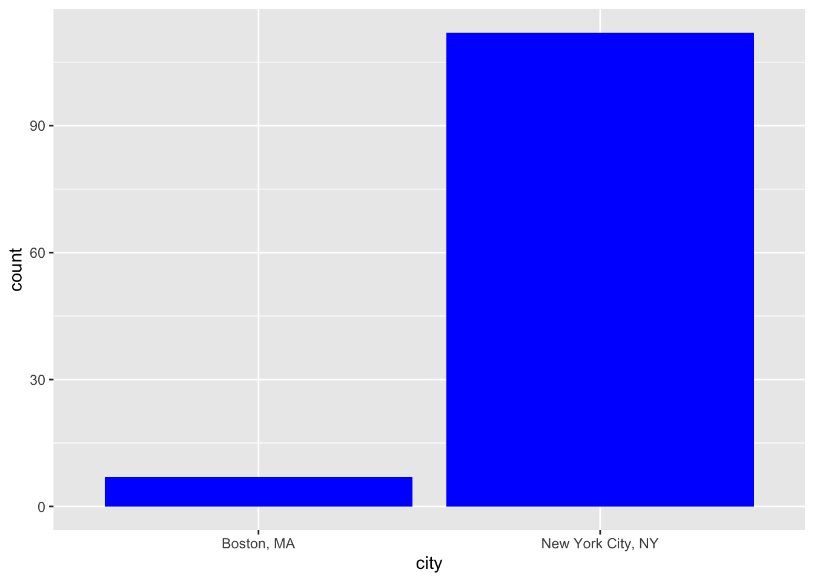
One variable – continuous
If you want to display a continuous variable’s distribution of values, you can use a histogram. Its geom_* function is geom_histogram():
billboard <- read_csv("data/billboard.csv")Rows: 317 Columns: 79
── Column specification ────────────────────────────────────────────────────────
Delimiter: ","
chr (2): artist, track
dbl (65): wk1, wk2, wk3, wk4, wk5, wk6, wk7, wk8, wk9, wk10, wk11, wk12, wk...
lgl (11): wk66, wk67, wk68, wk69, wk70, wk71, wk72, wk73, wk74, wk75, wk76
date (1): date.entered
ℹ Use `spec()` to retrieve the full column specification for this data.
ℹ Specify the column types or set `show_col_types = FALSE` to quiet this message.song_tbl <- billboard |>
distinct(artist, track) |>
mutate(song_id = row_number())
rank_tbl <- billboard |>
pivot_longer(cols = starts_with("wk"),
names_to = "week",
names_prefix = "wk",
values_to = "rank") |>
mutate(week = as.numeric(week),
date = date.entered + (week-1) * 7) |>
drop_na() |>
left_join(song_tbl, by = c("artist", "track")) |>
select(song_id, date, week, rank)How does the distribution of songs over the weeks look like?
ggplot(data = rank_tbl) +
geom_histogram(aes(x = week))`stat_bin()` using `bins = 30`. Pick better value with `binwidth`.
A smoothed histogram is geom_density():
ggplot(data = rank_tbl) +
geom_density(aes(x = week))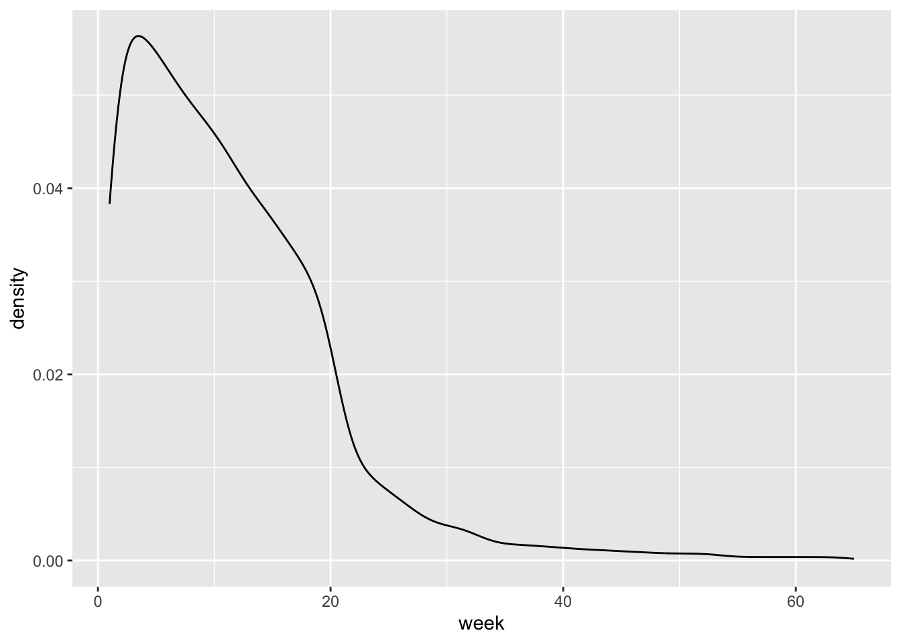
Two variables
In the majority of cases, you will want to display the relationship between two variables, one on the x- and the other one on the y-axis.
Both continuous
county_data_midwest <- socviz::county_data |>
filter(census_region == "Midwest") |>
drop_na()If both variables are continuous, the easiest option is to use a scatter plot.
ggplot(data = county_data_midwest) +
geom_point(aes(x = per_dem_2016, y = per_gop_2016))
If you don’t like dots, the shape = argument allows you to change the shape of the data points. There are also other arguments to change, for instance, transparency (alpha =) or size (size =). Find an overview of the allowed aesthetic specifications here.
ggplot(data = county_data_midwest) +
geom_point(aes(x = per_dem_2016, y = per_gop_2016),
shape = "cross",
size = 2)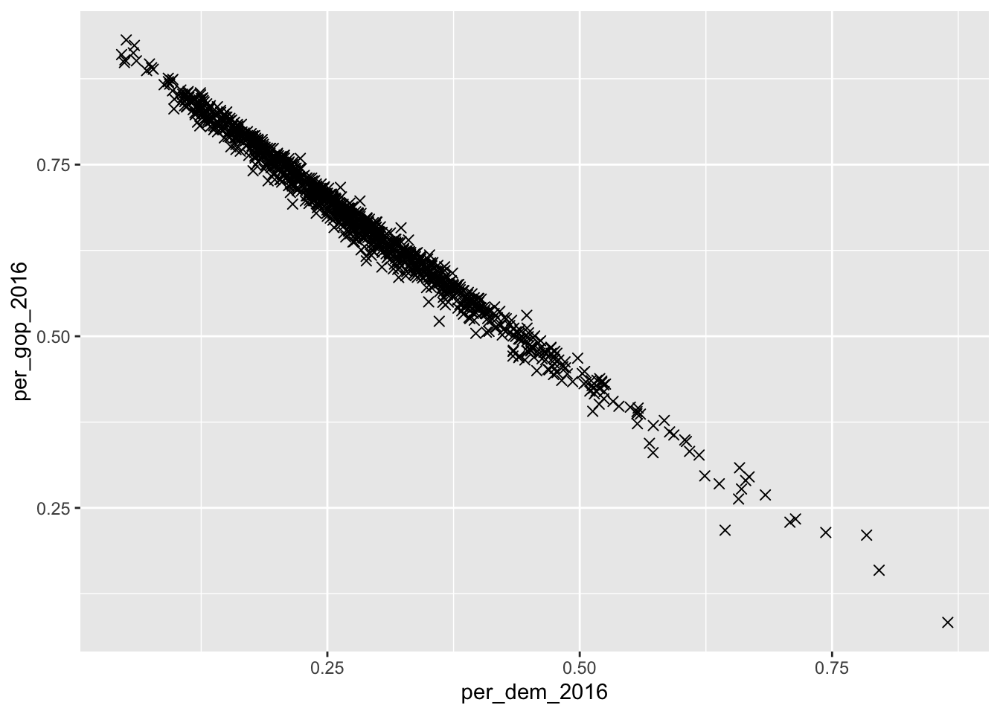
Here, it might make sense to color the points according to a categorical variable (state, in this case). If so, a legend is added which maps the colors to their respective values.
ggplot(data = county_data_midwest) +
geom_point(aes(x = per_dem_2016, y = per_gop_2016)) 
Since I look at the relationship between votes for the Republicans and the Democrats, and the U.S. is a two-party system, there is a fairly clear relationship between them both. This can also be depicted using geom_smooth():
ggplot(data = county_data_midwest) +
geom_smooth(aes(x = per_dem_2016, y = per_gop_2016, color = state))`geom_smooth()` using method = 'loess' and formula = 'y ~ x'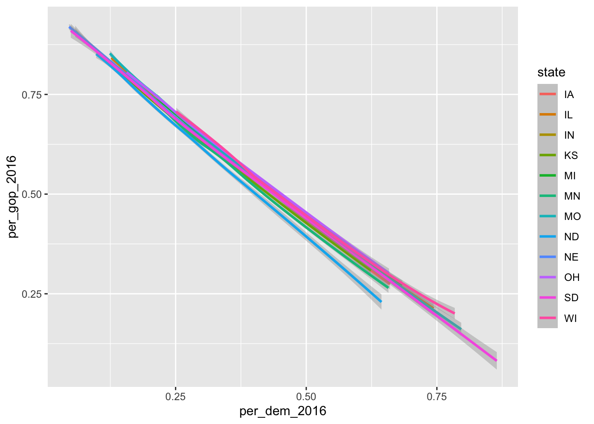
Here, color = state has a different effect: each dimension of the categorical variable gets its own line.
If you do not want it to be smoothed, just use geom_line().
ggplot(data = county_data_midwest) +
geom_line(aes(x = per_dem_2016, y = per_gop_2016), color = "grey") 
Discrete X, continuous Y
In this case, different categories of data will be put on the x-axis and some of their properties will be displayed on the y-axis. The probably most prominent example for this type of plot is a box plot:
ggplot(data = county_data_midwest) +
geom_boxplot(aes(x = state, y = per_gop_2016))
Both discrete
It is rarely the case that you want to depict two categorical variables in one plot. If so, you can use geom_jitter(). It is related to geom_point(). The difference is that with geom_jitter(), a little bit of noise is added to the dots, making them appear distinct.
ggplot(data = county_data_midwest) +
geom_jitter(aes(x = state, y = winner))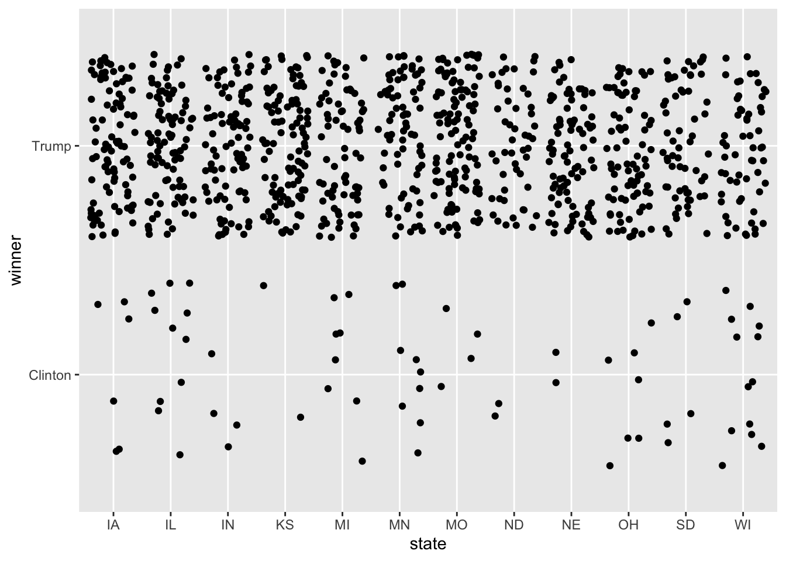
As opposed to:
ggplot(data = county_data_midwest) +
geom_point(aes(x = state, y = winner))
Making graphs “publishable”
So far, I have only added one layer to the plot. This suffices for the most basic visualizations. The good thing about R and RMarkdown is, however, that you can write entire publications only using their means. Hence, the plots need to look awesome. This section is dedicated to how you can achieve this. First, I will touch upon how you can make them look good using scales. labs() allow you to add titles, captions, and axis labels. Finally, facet_* allows you to plot multiple plots into one.
Scales
Scales can be used to take control of how the data’s values are mapped to the aesthetic’s visual values. You can find a more exhaustive tutorial on them here.
scale_*_continuous– for dealing with continuous values. (you can find an exhaustive list of colors in R here)
ggplot(data = county_data_midwest) +
geom_point(aes(x = per_dem_2016, y = per_gop_2016, color = white)) +
scale_x_continuous(limits = c(0, 1)) +
scale_y_continuous(limits = c(0, 1)) +
scale_color_gradient(low = "green",
high = "red")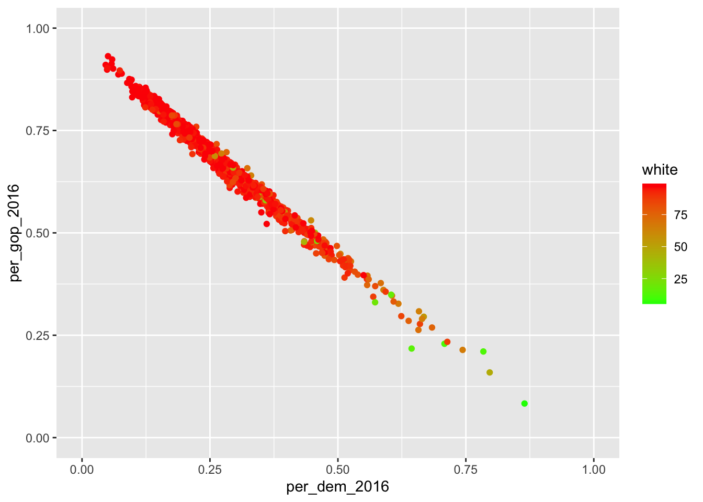
scale_*_discrete– for dealing with discrete valuesscale_*_manual– manually mapping discrete values to visual values
socviz::county_data |>
filter(state %in% c("IA", "IL", "IN", "KS")) |>
ggplot() +
geom_point(aes(x = per_dem_2016, y = per_gop_2016, color = state)) +
scale_color_manual(values = c("IA" = "blue",
"IL" = "green",
"IN" = "red",
"KS" = "purple"),
name = "State",
labels = c("Iowa", "Illinois", "Indiana", "Kansas")) Warning: Removed 4 rows containing missing values or values outside the scale range
(`geom_point()`).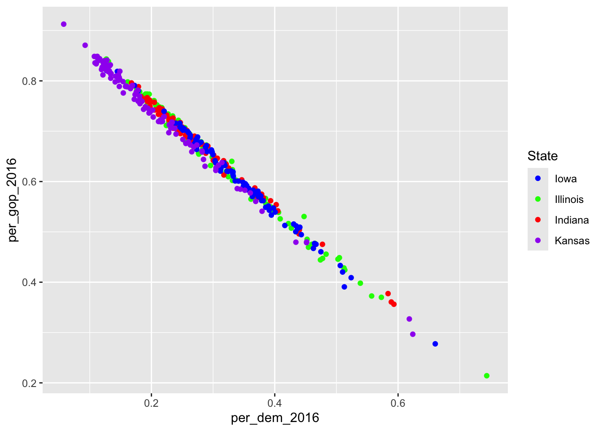
Adding titles, captions, etc.
Now you have modified the scales and colors – there is a lot more to be modified if you want to – but you have not added a meaningful title, a nice caption (where were the data obtained?), and the axes do not have proper names, too. This can be achieved using labs() (which is the abbreviation for labels).
socviz::county_data |>
filter(state %in% c("IA", "IL", "IN", "KS")) |>
ggplot() +
geom_point(aes(x = per_dem_2016, y = per_gop_2016, color = state)) +
scale_color_manual(values = c("IA" = "blue",
"IL" = "green",
"IN" = "red",
"KS" = "purple"),
name = "State",
breaks = waiver(),
labels = c("Iowa", "Illinois", "Indiana", "Kansas")) +
scale_x_continuous(limits = c(0, 1)) +
scale_y_continuous(limits = c(0, 1)) +
ggtitle("Relationship between percentages of votes for Democrats and Republicans in selected states in the Midwest") +
xlab("Percentage of votes for the Democrats in 2016") +
ylab("Percentage of votes for the Republicans in 2016") Warning: Removed 4 rows containing missing values or values outside the scale range
(`geom_point()`).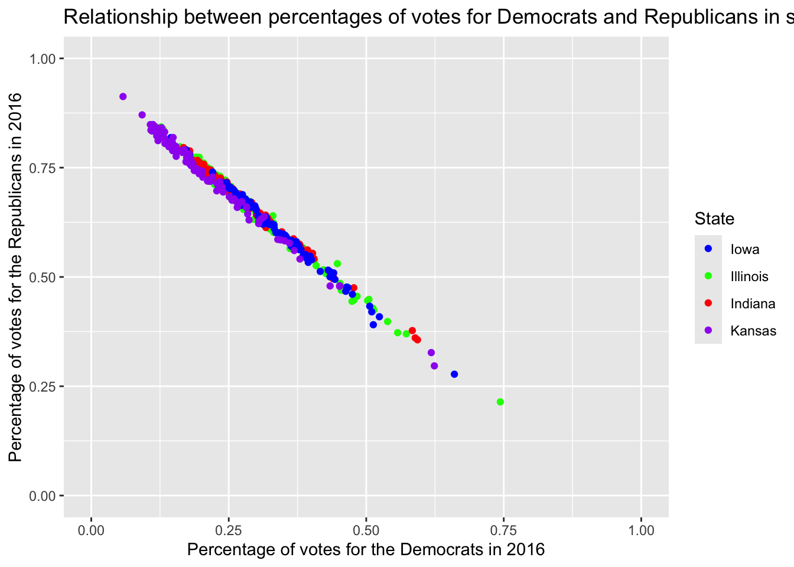
Well, that doesn’t look good, the title is too long. Inserting \n – for new line – will do the trick.
socviz::county_data |>
filter(state %in% c("IA", "IL", "IN", "KS")) |>
ggplot() +
geom_point(aes(x = per_dem_2016, y = per_gop_2016, color = state)) +
scale_color_manual(values = c("IA" = "blue", "IL" = "green", "IN" = "red", "KS" = "purple"),
name = "State",
breaks = waiver(),
labels = c("Iowa", "Illinois", "Indiana", "Kansas")) +
scale_x_continuous(limits = c(0, 1)) +
scale_y_continuous(limits = c(0, 1)) +
ggtitle("Relationship between percentages of votes for Democrats \nand Republicans in selected states in the Midwest") +
xlab("Percentage of votes for the Democrats in 2016") +
ylab("Percentage of votes for the Republicans in 2016") Warning: Removed 4 rows containing missing values or values outside the scale range
(`geom_point()`).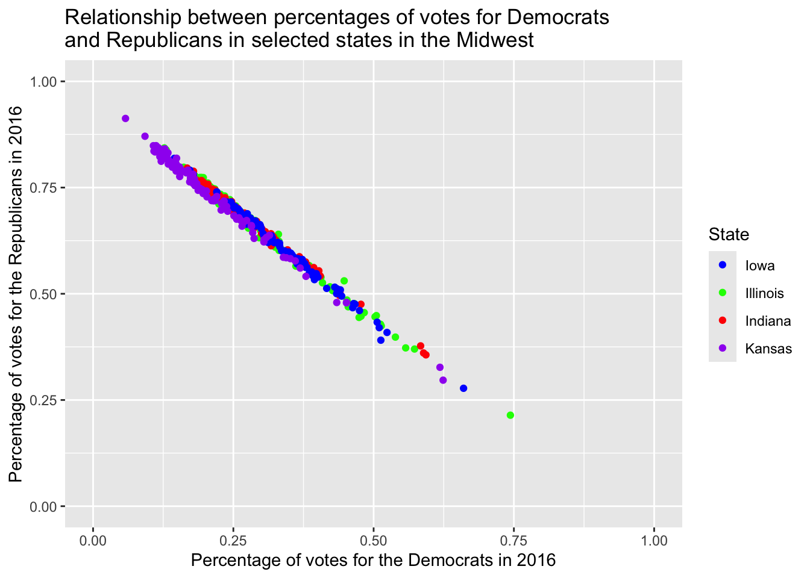
However, providing it with three different layers just for labeling is pretty tedious. This is where labs() comes in handy.
socviz::county_data |>
filter(state %in% c("IA", "IL", "IN", "KS")) |>
ggplot() +
geom_point(aes(x = per_dem_2016, y = per_gop_2016, color = state)) +
scale_color_manual(values = c("IA" = "blue", "IL" = "green", "IN" = "red", "KS" = "purple"),
name = "State",
breaks = waiver(),
labels = c("Iowa", "Illinois", "Indiana", "Kansas")) +
scale_x_continuous(limits = c(0, 1)) +
scale_y_continuous(limits = c(0, 1)) +
labs(title = "Relationship between percentages of votes for Democrats \nand Republicans in selected states in the Midwest",
caption = "Data obtained from the socviz R package",
x = "Percentage of votes for the Democrats in 2016",
y = "Percentage of votes for the Republicans in 2016") Warning: Removed 4 rows containing missing values or values outside the scale range
(`geom_point()`).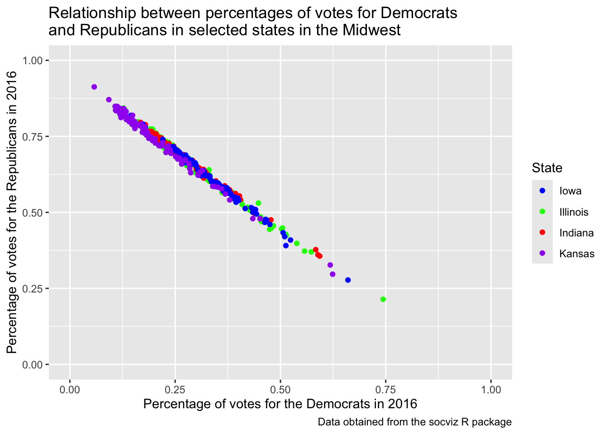
Facets
The original data set consists of four different census regions. If I were to compare them, I could color them accordingly.
socviz::county_data |>
drop_na() |>
ggplot() +
geom_point(aes(x = per_dem_2016, y = per_gop_2016, color = census_region)) +
scale_x_continuous(limits = c(0, 1)) +
scale_y_continuous(limits = c(0, 1)) +
scale_color_discrete()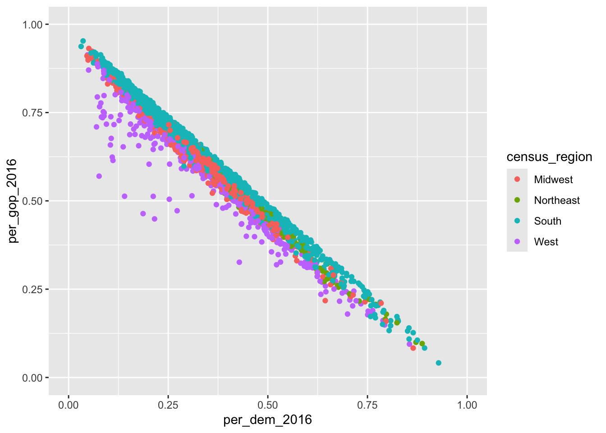
Despite the coloring according to the different states, it is still hard to assess whether there really are differences. Apart from that, I would like to assess the impact the percentage of white people in the population has. This would be easier if I put them into individual graphs. I can achieve this using so-called facets. Facets enable me to divide the plot into subplots based on categorical variables. facet_wrap() puts them into a rectangular layout. The categorical variable needs to be provided prefixed with a tilde ~, nrow determines the number of rows.
socviz::county_data |>
drop_na() |>
ggplot() +
geom_point(aes(x = per_dem_2016, y = per_gop_2016, color = white)) +
scale_x_continuous(limits = c(0, 1)) +
scale_y_continuous(limits = c(0, 1)) +
scale_color_gradient(low = "green",
high = "red") +
facet_wrap(vars(census_region),
nrow = 2)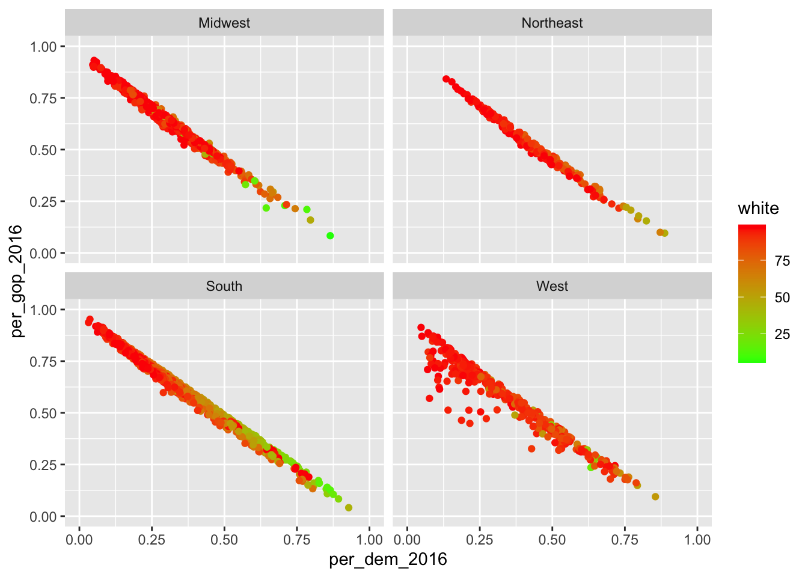
Apart from that, I can also spread it out using two different variables. Here, I will look at differences in the distribution of whites in the counties split up by who won in 2016 and 2012. This can be achieved using facet_grid(categorical_variable_1~categorical_variable_2). The former one will be put into rows, the latter into columns.
socviz::county_data |>
drop_na() |>
ggplot() +
geom_point(aes(x = per_dem_2016, y = per_gop_2016, color = white)) +
scale_x_continuous(limits = c(0, 1)) +
scale_y_continuous(limits = c(0, 1)) +
scale_color_gradient(low = "green",
high = "red") +
facet_grid(winner~winner12)
If you want to facet using only one variable, put a dot at where the other variable would stand otherwise…
socviz::county_data |>
drop_na() |>
ggplot() +
geom_point(aes(x = per_dem_2016, y = per_gop_2016, color = white)) +
scale_x_continuous(limits = c(0, 1)) +
scale_y_continuous(limits = c(0, 1)) +
scale_color_gradient(low = "green",
high = "red") +
facet_grid(.~winner)
… or just use facet_wrap().
Exporting graphics
If you include the graphics in an RMarkdown document, make sure you use the proper chunk options (i.e., {r echo=FALSE, message=FALSE, warning=FALSE}).
If you, however, want to export it and put it into an MS Word document or so, you can just use the ggsave() function. By default, it just takes the last plot that has been created and saves it to a path that needs to be specified. If it contains a file extension, ggsave() just uses this one.
ggplot(mtcars, aes(mpg, wt)) +
geom_point()
ggsave("mtcars.pdf", device = "pdf") #save it to pdf
ggsave("mtcars.png") #save it to png
ggsave("mtcars.pdf", width = 4, height = 4) #specify width and height -- in inches by default
ggsave("mtcars.pdf", width = 20, height = 20, units = "cm") #change unit using the units argumentFurther readings
- ggplot2 cheatsheet.
- ggplot2 – the book.
- The graphic cookbook for R.
- Another tutorial.
- A full-on online course by Kieran Healy (comes with an R package as well).
- Need some inspiration? Check out the graph gallery.
- The
ggsave()function in further detail. - You can also consult the
introversepackage.introverse::show_topics("ggplot2")will give you overviews of the respective package’s functions, andget_help("name of function")will help you with the respective function.
Exercises
Use the IMDb file.
Try to think about how you could answer the following questions graphically. If you fail, take a look at the hints.
- Do higher rated movies generate more revenue?
- Plot revenue and rating as a scatter plot.
- Do you think there is a correlation? How could you make stronger claims about it? Maybe even graphically?
- Interpret the plot.
- Add a nice title and labels.
- How evenly are the different years’ movies represented? (Why would it be pointless to make claims about the productivity of directors?)
- Make a bar plot.
- Interpret the plot.
- Add a nice title and labels.
- Which year was the best for cinema fetishists? (When could they watch the most highest rated movies?)
- Make a box plot.
- Interpret the plot.
- Add a nice title and labels.
Iteration
We also will work with lists. Lists can contain elements of different lengths (which distinguishes them from tibbles). This makes them especially suitable for web scraping. Other than (atomic) vectors they are not just vectorized since they can contain elements of all different kinds of format.
To iterate over lists, we have the map() family from the purrr package, which applies functions over lists. pluck() extracts elements from the list.
raw_list <- list(first_element = 1:4, 4:6, 10:42)
str(raw_list) # shows you the elements of the listList of 3
$ first_element: int [1:4] 1 2 3 4
$ : int [1:3] 4 5 6
$ : int [1:33] 10 11 12 13 14 15 16 17 18 19 ...map(raw_list, mean)$first_element
[1] 2.5
[[2]]
[1] 5
[[3]]
[1] 26map(raw_list, ~{mean(.x) |> sqrt()})$first_element
[1] 1.581139
[[2]]
[1] 2.236068
[[3]]
[1] 5.09902map_dbl(raw_list, mean) # by specifying the type of output, you can reduce the listfirst_element
2.5 5.0 26.0 raw_list |> pluck(1) == raw_list |> pluck("first_element")[1] TRUE TRUE TRUE TRUEThis can also be achieved using a loop. Here, you use an index to loop over objects and do something to their elements. Typically, you create an empty list before and put the new output at the respective new position.
new_list <- vector(mode = "list", length = length(raw_list))
for (i in seq_along(raw_list)){
new_list[[i]] <- mean(raw_list[[i]])
}Flow Control, Functional programming, and iterations
So far, you have learned heaps of data wrangling and analyses, but no real customization of R. This will change now, as you will be introduced to functions. Furthermore, the operations have only been applied to one singular object (read vector or data.frame/tibble). Iteration means that you perform the same operation on multiple objects/data sets/you name it.
Today’s session will all be about following the DRY principle. DRY stands for Don’t Repeat Yourself.
“Why not?,” you may ask. Well, the problem with copy-and-pasting code is that you have to change all the variable names in every instance of your code. RStudio has a nice Search-and-Replace function which might facilitate that, but this practice still bears the danger of writing code that contains errors. This is where you will need to make use of the tools that R offers to iterate over a couple of elements, perform operations on them, and return the results. An example:
example_strings <- c("this", "is", "how", "a", "for", "loop", "works")
for (i in seq_along(example_strings)) {
print(example_strings[[i]])
}[1] "this"
[1] "is"
[1] "how"
[1] "a"
[1] "for"
[1] "loop"
[1] "works"Another option – from the tidyverse – is the purrr package:
walk(example_strings, print)[1] "this"
[1] "is"
[1] "how"
[1] "a"
[1] "for"
[1] "loop"
[1] "works"So, what has this code done? In both cases, it has taken the function print() and applied it to every element of our vector. Copying-and-pasting would have looked like this:
print(example_strings[[1]])[1] "this"print(example_strings[[2]])[1] "is"print(example_strings[[3]])[1] "how"print(example_strings[[4]])[1] "a"print(example_strings[[5]])[1] "for"print(example_strings[[6]])[1] "loop"print(example_strings[[7]])[1] "works"print(example_strings[[7]])[1] "works"Damn, I pasted the last instance twice. In this case, the mistake is obvious, but oftentimes it is not.
In the following, I will provide you a more extensive introduction into conditional statements, functions, loops, and the purrr (and it’s parallelized counter-part furrr) package.
Flow control
Sometimes you want your code to only run in specific cases. For mutate(), I have already showed you conditional imputation of values with case_when(). A more generalized approach for conditionally running code in R are if statements. They look as follows:
if (conditional_statement evaluates to TRUE) {
do_something
}They also have an extension – if…else:
if (conditional_statement evaluates to TRUE) {
do_something
} else {
do_something_else
}Imagine that I want R to tell me whether a number it draws is smaller than or equal to five:
set.seed(1234)
x <- sample(10, 1)
if (x <= 5) {
print("x is smaller than or equals 5")
} In this case, x is 3, so the if statement returns something. If this is not the case, nothing happens:
set.seed(12345)
x <- sample(10, 1)
if (x <= 5) {
print("x is smaller than or equals 5")
}[1] "x is smaller than or equals 5"Now I could extend it by another if statement:
set.seed(1234)
x <- sample(10, 1)
if (x <= 5) {
print("x is smaller than or equals 5")
}
if (x > 5) {
print("x is greater than 5")
}[1] "x is greater than 5"Here, x is 10, so only the second if statement returns something.
But the else allows me to take a shortcut and write it more concisely:
if (x <= 5) {
print("x is smaller than or equals 5")
} else {
print("x is greater than 5")
}[1] "x is greater than 5"Please note that the condition inside the if statement needs to be a vector of type logical (hence, either TRUE or FALSE). Apart from that, only vectors of length 1 are allowed. The following will not work:
if (c(TRUE, FALSE, TRUE)) {
print("example")
} #This will throw an error!!!Functions
So far, every call you have made within R contained a function. Even the most basic operations, such as c() for building vectors, rely on functions. Functions are the verbs of R, they do something to your objects. Hence, you as someone who obeys the principles of DRY can make good use of them. Whenever you need to copy code to perform certain tasks to an object, you can also put those tasks into a function and just provide the function with the objects.
Imagine you want to rescale some variables in a tibble (an example I took from the OG version of R4DS (Wickham and Grolemund 2016)):
set.seed(1234)
df <- tibble(
a = rnorm(10),
b = rnorm(10),
c = rnorm(10),
d = rnorm(10)
)
df$a <- (df$a - min(df$a, na.rm = TRUE)) /
(max(df$a, na.rm = TRUE) - min(df$a, na.rm = TRUE))
df$b <- (df$b - min(df$b, na.rm = TRUE)) /
(max(df$b, na.rm = TRUE) - min(df$b, na.rm = TRUE))
df$c <- (df$c - min(df$c, na.rm = TRUE)) /
(max(df$c, na.rm = TRUE) - min(df$c, na.rm = TRUE))
df$d <- (df$d - min(df$d, na.rm = TRUE)) /
(max(df$d, na.rm = TRUE) - min(df$d, na.rm = TRUE))Given that you now know how to loop over the tibble, you can certainly reduce the amount of copy-pasting here.
df <- tibble(
a = rnorm(10),
b = rnorm(10),
c = rnorm(10),
d = rnorm(10)
)
for (i in seq_along(df)) {
df[[i]] <- (df[[i]] - min(df[[i]], na.rm = TRUE)) /
(max(df[[i]], na.rm = TRUE) - min(df[[i]], na.rm = TRUE))
}However, the operation within the loop is generalizable: it always only takes a vector of numeric values as input, performs some actions on them and returns another vector of the same length, but rescaled into a range from 0 to 1. Hence, the operation fulfills the requirements for putting it into a function.
Doing so has some advantages:
- If an error occurs, you can simply change the function in one place – when you define it – instead of changing all the occurrences in your code
- It will certainly make your code easier to read –
rescale0to1is a more concise description than(x - min(x, na.rm = TRUE)) / (max(x, na.rm = TRUE) - min(x, na.rm = TRUE))(–> you see what I did here? I already replaced the arguments with a generic variable. You can use it to write the function yourself.)
Writing your own functions
When you define functions in R, you need to follow a certain structure:
function_name <- function(argument_1, argument_2, argument_n) {
function_body
}- The
function_nameis the thing you will call (e.g.,mean()). In general, it should be a verb, it should be concise, and it should be in_snakecase. - The
arguments are what you need to provide the function with (e.g.,mean(1:10)). - The
function bodycontains the operations which are performed to the arguments. It can contain other functions as well – which need to be defined beforehand (e.g.,sum(1:10) / length(1:10))). It is advisable to split up the function body into as little pieces as you can.
An example: Roulette
In the following, I will guide you through a quick example on how you could use functions to play an extremely basic game of Roulette with R. You provide it with two values (how much you bet and which number you choose) and R takes care of the rest.
So what does the function need to do? First, it needs to draw a number between 0 and 36. Second, it needs to compare the bet and its corresponding number. Third, it needs to return the respective result.
play_roulette <- function(bet, number) {
draw <- sample(0:36, 1)
tibble(
winning_number = draw,
your_number = number,
your_bet = bet,
your_return = if (number == draw) {
bet * 36
} else {
0
}
)
}
play_roulette(bet = 1, number = 35)# A tibble: 1 × 4
winning_number your_number your_bet your_return
<int> <dbl> <dbl> <dbl>
1 15 35 1 0But how to make sure that I do not bet on a number which I cannot bet on (i.e., numbers greater than 36)? Or, put differently, how to forbid values? Use stop(). Besides, how to set default values for the arguments? Just use argument = default.
play_roulette_restricted <- function(bet = 1, number) {
if (number > 36) stop("You can only bet on numbers between 0 and 36.")
draw <- sample(0:36, 1)
tibble(
winning_number = draw,
your_number = number,
your_bet = bet,
your_return = if (number == draw) {
bet * 36
} else {
0
}
)
#return(tbl_return)
}
play_roulette_restricted(number = 3)# A tibble: 1 × 4
winning_number your_number your_bet your_return
<int> <dbl> <dbl> <dbl>
1 1 3 1 0The function returns the results of the last call, i.e., the tibble. If you want to be more concrete about what it should return – or make an earlier return – use return(). The function will stop as soon as it hits a return() statement.
play_roulette_basic <- function(bet = 1, number) {
if (number > 36) stop("You can only bet on numbers between 0 and 36.")
draw <- sample(0:36, 1)
if (number == draw) {
return(str_c("Nice, you won", as.character(bet * 36), "Dollars", sep = " "))
} else {
return("I'm sorry, you lost.")
}
}
play_roulette_basic(number = 35)[1] "I'm sorry, you lost."Functional programming with tidyverse functions
The majority of dplyr verbs uses so-called tidy evaluation which is a framework for controlling how expressions and variables in your code are evaluated by the tidyverse functions. The two main things here are data masking and tidy selection. The former facilitates computing on values within the data set and refers to functions such as filter(), where you can just type in variable names instead of tediously typing name_of_df$var_name. The latter aims to facilitate working with the columns in the data set. It is provided by the tidyselect package and allows you, for instance, to work with code such as tbl |> select(starts_with("a")). More examples can be acquired using ?dplyr_tidy_select.
I will not go into detail here but rather stick to what implications this has to you. If you are interested in the theoretical underpinnings, read the chapter on “Metaprogramming” in Advanced R by Hadley Wickham.
If your function takes a user-supplied variable as an argument, you need to consider this arguments in the pipeline. For instance, the following function calculates the mean, median, and standard deviation of a variable.
my_summary <- function(tbl, var) {
tbl |>
summarize(
mean = mean({{ var }}),
median = median({{ var }}),
sd = sd({{ var }})
)
}
mtcars |> my_summary(cyl) mean median sd
1 6.1875 6 1.785922If the variable names are supplied in a character vector, you need all_of():
summarize_mean <- function(data, vars) {
data |> summarize(n = n(), across({{ vars }}, mean))
}
mtcars |>
group_by(cyl) |>
summarize_mean(all_of(c("hp", "mpg"))) |>
glimpse()Rows: 3
Columns: 4
$ cyl <dbl> 4, 6, 8
$ n <int> 11, 7, 14
$ hp <dbl> 82.63636, 122.28571, 209.21429
$ mpg <dbl> 26.66364, 19.74286, 15.10000Another handy thing is changing the variable names in the output depending on the input names. Here, you can use glue syntax and :=:
my_summary_w_names <- function(tbl, var){
tbl |>
summarize(
"mean_{{ var }}" := mean({{ var }}),
"median_{{ var }}" := median({{ var }}),
"sd_{{ var }}" := sd({{ var }})
)
}
mtcars |> my_summary_w_names(cyl) mean_cyl median_cyl sd_cyl
1 6.1875 6 1.785922Find more on programming with dplyr in this vignette.
Further readings
If you want to learn more about functional programming, check out the following resources:
- The R4DS chapter
- A basic tutorial
- A book chapter about control-flow and functions
- Hadley on functional programming
Iteration
Strictly speaking, there are three kinds of loops: for, repeat, and while. I will touch upon for and while, because they are more straight-forward than repeat. repeat loops will repeat a task until you tell it to stop by hitting the escape button or adding a condition up front. Interactive programming – sitting in front of your machine and hitting the escape button to break a loop – is no desired practice and while loops have internalized the condition already. Hence, repeat loops do not appear to have any advantage and I leave them out deliberately.
for loops
for loops are the sort of loops you will have to work with more often as they allow you to loop over a predefined number of elements. For this sake, I will briefly revise how you index vectors, lists, and tibbles.
The ith element of a vector can be accessed by using either [[i]] or [i].
The ith element of a list can be obtained by using [[i]] – [i] would return a sub-list instead of the element. The second element of the ith element in a list (if it were a vector or a list) can be obtained using [[i]][[2]] etc.
The ith column of a tibble can be accessed as a vector using [[i]]. The second value of the ith column of a tibble can be accessed using [[i]][[2]]
How does that matter for for loops? Remember the example I showed you in the beginning? All a for loop does is iterating over a vector of values and imputing them instead of a placeholder.
example_strings <- c("this", "is", "how", "a", "for", "loop", "works")
for (i in example_strings) {
print(i)
}[1] "this"
[1] "is"
[1] "how"
[1] "a"
[1] "for"
[1] "loop"
[1] "works"For a more general approach, you can also loop over the indices of the vector using seq_along() which creates a sequence along a vector.
seq_along(example_strings) # seq_along looks like this[1] 1 2 3 4 5 6 7This is especially useful if you want to modify the elements of a vector or a tibble.
for (i in seq_along(example_strings)) {
print(example_strings[[i]])
}[1] "this"
[1] "is"
[1] "how"
[1] "a"
[1] "for"
[1] "loop"
[1] "works"#Hence, the first iteration looks like this.
print(example_strings[[seq_along(example_strings)[[1]]]])[1] "this"# translates to
print(example_strings[[1]])[1] "this"Now that you have seen the general approach for using a for loop, how can you use them in practice for data manipulation? Whenever you use a for loop, you need to follow a three step approach:
- Output: In the beginning, you need to create a vector that we can fill with output. You also need to determine the length of the vector in the beginning. This is due to efficiency: if you were to grow the vector by every iteration (using
c), the loop becomes very slow. This is especially important if you work with large data sets. An example for creating an empty vector of a certain length isoutput <- vector(mode = "numeric", length = length_of_output). - Sequence:
i in seq_along(variable)tells thefor loopwhat to loop over.
- Body: The actual code. Performs the operation on the respective instance and stores the resulting value in the pre-defined output vector at position
i.
for loops are considered slow. They are not, at least not if you stick to the following rules:
- Always pre-allocate space – make sure that R does not have to expand your objects
- Do as much as you can outside the loop – every operation inside the loop will be repeated every time the loop is repeated
In general, you will come across three different problems with for loops.
- Modifying an existing object
- Length of output is unknown
- Sequences are of unknown length
Modifying the existing object
Sometimes you want to modify an existing object rather than creating a new one. This is useful when working with large datasets or when you need to update values in place.
Basic example: Standardizing columns Let’s say you have a dataset with test scores that you want to standardize (mean = 0, sd = 1):
scores <- tibble(
student_id = 1:5,
math = c(85, 92, 78, 88, 95),
science = c(90, 85, 80, 92, 88),
english = c(88, 90, 85, 86, 92)
)
for (col in c("math", "science", "english")) {
scores[[col]] <- (scores[[col]] - mean(scores[[col]])) / sd(scores[[col]])
}
scores |>
summarize(across(c(math, science, english),
list(mean = mean, sd = sd)))# A tibble: 1 × 6
math_mean math_sd science_mean science_sd english_mean english_sd
<dbl> <dbl> <dbl> <dbl> <dbl> <dbl>
1 8.88e-16 1 7.22e-17 1 -9.77e-16 1Length of output is unknown
Sometimes, you do not know how long your output object is. This is, for instance, if you simulate vectors of random length. Normally, you would just put the values into a vector. However, if you do not know the length, then you would have to ask R to grow the vector every iteration. But this is extremely inefficient.
For this, the solution is lists. You always know how many iterations your loop will have. Hence, you can create a list of this exact length and then just store the results in the list (as lists do not care about the length of the singular elements). Afterwards, you can unlist() or flatten_*() the list into a vector.
a_list <- vector(mode = "list", length = 10L)
for (i in seq_along(a_list)) {
len <- sample(1:10, 1)
a_list[[i]] <- rnorm(len)
}
a_list |>
unlist() # or unlist(a_list) [1] 0.69760871 0.54999735 -0.40273198 -0.19159377 -1.19452788 -0.05315882
[7] -1.43192024 -2.01016571 0.33832922 0.65128696 2.43315152 1.19133821
[13] 0.92244282 0.62109737 0.35633348 -0.47471847 0.06599349 -0.50247778
[19] 2.18711916 -0.58172745 0.70008023 1.49217658 -0.05210512 -0.19593462
[25] -0.64906975 -1.10976723 0.84927420 -0.01394090 0.16863694 0.86926335
[31] -0.79866986 -0.50375053 2.31559832 -0.69220912 0.49335047 -0.05760147
[37] 1.82420830 0.08005964 -0.63140930 -1.51328812 -0.63609983 0.22630153
[43] 1.01369035 -1.17194831 0.66871433 -1.65010093 -0.36585225 -0.31611833
[49] -1.94824605 0.92005752 -0.62287159 -0.17827861 0.78695133 -0.58054783
[55] 0.91825114If we wanted to add the information in a tibble, we could add it during the run and use bind_rows() afterwards.
a_list <- vector(mode = "list", length = 10L)
for (i in seq_along(a_list)) {
len <- sample(1:10, 1)
a_list[[i]] <- list(
run = i,
values = rnorm(len)
)
}
df <- a_list |>
bind_rows()
df# A tibble: 55 × 2
run values
<int> <dbl>
1 1 0.700
2 1 -1.20
3 1 -0.499
4 2 0.0976
5 3 -0.119
6 3 2.39
7 3 0.735
8 3 0.474
9 3 -0.234
10 3 -0.854
# ℹ 45 more rowsUnknown sequence length
Sometimes, you also do not know how long your input sequence is. Instead, you want to loop until a certain condition is met. This is for instance the case when looping across multiple pages in web-scraping. Here, while loops come in handy (but this is the only use case I could think of).
The basic structure of while loops is as follows:
while (condition) {
code
}What could an example look like?4 The following loop keeps running until three heads appeared in a row and the condition is met.
Please note that both vectors which are to be modified within the loop – indicator and head – need to be created beforehand. If I had not created head beforehand, the loop would not have started because there would not have been any vector to assess the length.
indicator <- 0
head <- c()
while (length(head) < 3) {
if (sample(2, 1) == 1) {
x <- "head"
} else {
x <- "tail"
}
if (x == "head") {
head <- c(head, 1)
} else {
length(head) <- 0
}
indicator <- indicator + 1
}In this case, you still want to pre-allocate space. Hence, you could also use a list here. You can just do a very long list and afterwards cut it down to size using purrr::compact().
indicator <- 0
values <- vector(mode = "list", length = 1000)
head <- c()
while (length(head) < 3) {
if (sample(2, 1) == 1) {
x <- "head"
} else {
x <- "tail"
}
if (x == "head") {
head <- c(head, 1)
} else {
length(head) <- 0
}
values[[indicator + 1]] <- x
indicator <- indicator + 1
}
length(values)[1] 1000values |> tail(5) #last 5 values[[1]]
NULL
[[2]]
NULL
[[3]]
NULL
[[4]]
NULL
[[5]]
NULLvalues |> compact() #removes all NULL elements[[1]]
[1] "tail"
[[2]]
[1] "head"
[[3]]
[1] "head"
[[4]]
[1] "tail"
[[5]]
[1] "head"
[[6]]
[1] "head"
[[7]]
[1] "head"purrr::map()
Loops are good because they make everything very explicit. However, it is often tedious to type. The purrr package provides functions which enable you to iterate over vectors, data frames/tibbles, and lists. Apart from that, it has a lot of functions to work with lists as well. I will only cover the former functions. If you are interested in using purrr for working with lists, check out this extensive tutorial by Jenny Bryan.
In the beginning of this chapter, I used the walk() function. This function is related to map() as it iterates over a vector and applies a function to its respective elements. The difference is that walk() doesn’t store the results, map() does.
The basics
The structure of the map() function looks like this:
map(vector or list, function(, if you need it, additional arguments of function))map() always returns a list.
If you want the output to be in a different format, there are different, type-specific map() functions.
map_dfr()returns a data frame – by binding the rowsmap_dfc()returns a data frame – by binding the columnsmap_dbl()returns a double vectormap_chr()returns a character vectormap_lgl()returns a logical vector
In the following I will demonstrate the function of map() with a simple example. The basic vector I will map over is:
example_dbl <- c(1.5, 1.3, 1.8, 1.9, 2.3)In the first example, I just add 10 to the vector. In order to do so, I first need to create a function which adds 10.
add_10 <- function(x) {
x + 10
}map(example_dbl, add_10)[[1]]
[1] 11.5
[[2]]
[1] 11.3
[[3]]
[1] 11.8
[[4]]
[1] 11.9
[[5]]
[1] 12.3map_dbl(example_dbl, add_10)[1] 11.5 11.3 11.8 11.9 12.3map_chr(example_dbl, add_10) # does not make sense thoughWarning: Automatic coercion from double to character was deprecated in purrr 1.0.0.
ℹ Please use an explicit call to `as.character()` within `map_chr()` instead.[1] "11.500000" "11.300000" "11.800000" "11.900000" "12.300000"Anonymous functions
In the former example, I did specify the function beforehand. map() also allows you to define the function within the call using a so-called anonymous function \(x). The function’s argument is pre-defined (x in this case, but could be any placeholder) which stands for the respective input.
map_dbl(example_dbl, \(x){
x + 10
})[1] 11.5 11.3 11.8 11.9 12.3You can also map across tibbles. Here, you iterate over columns. For instance, calculating a mean for each column of the cars_tbl would have looked like this in purrr:
cars_tbl <- mtcars
map(cars_tbl, mean)$mpg
[1] 20.09062
$cyl
[1] 6.1875
$disp
[1] 230.7219
$hp
[1] 146.6875
$drat
[1] 3.596563
$wt
[1] 3.21725
$qsec
[1] 17.84875
$vs
[1] 0.4375
$am
[1] 0.40625
$gear
[1] 3.6875
$carb
[1] 2.8125When I put it into a tibble, names are preserved:
map_dfc(cars_tbl, mean)# A tibble: 1 × 11
mpg cyl disp hp drat wt qsec vs am gear carb
<dbl> <dbl> <dbl> <dbl> <dbl> <dbl> <dbl> <dbl> <dbl> <dbl> <dbl>
1 20.1 6.19 231. 147. 3.60 3.22 17.8 0.438 0.406 3.69 2.81Mapping over multiple arguments
Sometimes you want to apply things to multiple arguments. Think for example of the sample()function. It requires at least two arguments: the size of the sample you draw and the element space x you draw the sample from.
map2(10, 1:5, sample, replace = TRUE)[[1]]
[1] 4
[[2]]
[1] 1 10
[[3]]
[1] 7 6 10
[[4]]
[1] 1 6 6 6
[[5]]
[1] 7 5 5 5 6However, the map2() functions do not provide you with the possibility to control the type of output you get. You can take care of this using flatten_*().
map2(10, 5, sample) |> flatten_dbl()[1] 6 4 8 3 2If you provide it with a vector which is longer than 1, map2() will not perform the operation on every possible combination of the two vectors. Instead, it iterates over both vectors simultaneously, hence, the first iteration uses the first two values, the second iteration the second two values etc. Also note that it matches the arguments by position, not by name, hence the second argument is the size of the sample, the first one the element space.
map2(c(10, 5), c(5, 3), sample) [[1]]
[1] 7 8 4 5 10
[[2]]
[1] 1 3 5If you want to use an anonymous function, you can do so as well:
map2(c(10, 5), c(5, 3), \(x, y) sample(x, size = y))[[1]]
[1] 4 8 6 7 2
[[2]]
[1] 5 1 3If you want to map over more than two arguments, pmap() is the way to go. If you work with functions which need multiple values as arguments, you can store the vectors containing the respective values in a tibble. You should name the columns according to the function’s arguments.
An example here is drawing numbers from a normal distribution – rnorm(). The function takes three arguments: n– the number of values to be drawn, mean, and sd.
tibble(
n = 10,
mean = 1:10,
sd = 0.5
) |>
pmap(rnorm)[[1]]
[1] 0.2762588 1.2662280 0.4966849 1.3585467 0.7492659 0.7907689 0.3105248
[8] 1.1213886 1.4226768 0.1782507
[[2]]
[1] 2.509489 2.476223 2.410380 2.813266 2.116919 2.392606 1.324271 1.782913
[9] 1.659243 2.718527
[[3]]
[1] 3.433201 2.123642 2.645378 3.158825 3.418090 4.271263 3.200257 3.017893
[9] 3.141365 2.606872
[[4]]
[1] 3.914835 4.595926 4.682905 3.619700 3.513134 4.954899 3.123541 4.477846
[9] 5.167031 4.550836
[[5]]
[1] 5.545990 5.142692 4.220136 5.427874 5.213967 4.856378 4.899412 5.450255
[9] 3.873000 4.740156
[[6]]
[1] 5.818541 6.971764 6.147575 6.582609 6.121836 6.226723 6.257705 5.418025
[9] 5.531128 6.076174
[[7]]
[1] 6.859280 6.594688 6.866800 7.426123 6.291120 6.845510 7.212836 6.980094
[9] 6.177029 7.468289
[[8]]
[1] 8.743606 8.803838 8.125447 8.136227 8.075560 8.486074 8.504599 7.792865
[9] 7.557125 8.727168
[[9]]
[1] 8.815799 9.599489 9.429286 9.243450 8.937363 9.010900 8.082863 9.765383
[9] 9.820104 8.174236
[[10]]
[1] 10.015095 9.715463 10.305483 10.754284 9.661376 10.500636 10.617799
[8] 10.823392 9.387472 9.728401If you want to use an anonymous function, you can do so as well:
tibble(
n = 10,
mean = 1:10,
sd = 0.5
) |>
pmap(\(n, mean, sd) rnorm(n, mean, sd))[[1]]
[1] 0.7772323 0.0416125 0.9735931 0.9834894 1.0114624 0.3249466 1.0569058
[8] 1.3214937 1.1249126 0.9573270
[[2]]
[1] 1.4034810 2.1781413 2.0860438 2.9868643 1.4047264 1.5553486 1.5861139
[8] 1.3575352 1.3621371 0.7242431
[[3]]
[1] 4.093959 2.798665 4.107978 1.874788 3.051627 3.409510 3.433766 3.728983
[9] 2.355771 2.556102
[[4]]
[1] 2.433150 4.199967 4.212392 4.328054 4.488375 4.602977 4.691167 4.146277
[9] 4.189498 4.097553
[[5]]
[1] 5.140349 5.092283 4.738515 5.529182 4.269838 5.013457 4.620869 4.823738
[9] 4.207710 4.723280
[[6]]
[1] 6.245906 5.058408 5.516441 5.472807 6.025419 5.685291 6.462158 6.550718
[9] 6.566605 5.717003
[[7]]
[1] 7.087744 6.923719 6.899486 6.571321 7.224902 6.843166 7.430276 6.926348
[9] 6.838748 6.860724
[[8]]
[1] 8.402492 7.871721 7.946986 8.426621 8.797195 8.227491 7.582142 8.157361
[9] 8.107146 7.558428
[[9]]
[1] 9.694184 9.786892 9.286632 9.995288 8.535659 9.185741 8.114063 9.860151
[9] 8.876233 8.891865
[[10]]
[1] 10.696122 11.047684 10.039567 10.655035 9.739268 9.559926 9.317054
[8] 10.097944 9.665217 10.051768Speeding up with furrr
If you work with large data sets or have to perform a lot of iterations, you might want to speed up your code. The furrr package provides the same functionality as purrr, but allows for parallelization. This means that it can split up the tasks and distribute them across multiple CPU cores.
Its functionalities are the same as in purrr, just with a future_ prefix. In order to use it, you need to set up a plan first. Here, I use multisession, which works on all platforms (Windows, Mac, Linux). If you work on a Linux machine, you can also use multicore, which is faster.
needs(furrr)
plan(multisession) #set up parallelization
future_map_dbl(example_dbl, add_10)[1] 11.5 11.3 11.8 11.9 12.3Note that speed benefits are not apparent when working with small data sets or few iterations. The overhead of setting up parallel processes can outweigh the benefits. However, if you work with large data sets or have to perform a lot of iterations, you will see a speed increase.
Let’s make add_10 slow and benchmark furrr and purrr using the tictoc package. I have set the sleep time to 0.5 seconds to make the difference more apparent. My laptop has 8 cores, hence I create 24 tasks which will be distributed across the 8 workers (3 tasks per worker).
needs(tictoc)
# Create more tasks than workers
example_long <- 1:24
add_10_slow <- function(x) {
Sys.sleep(0.5) # Shorter sleep time
x + 10
}
# Sequential version
tic("Sequential (purrr)")
result_seq <- map_dbl(example_long, add_10_slow)
toc()Sequential (purrr): 12.084 sec elapsed# Parallel version
tic("Parallel (furrr)")
result_par <- future_map_dbl(example_long, add_10_slow)
toc()Parallel (furrr): 2.993 sec elapsedYou can see that the parallel version is much faster than the sequential one. However, the speed increase is not linear. This is due to the overhead of setting up parallel processes. Setting up worker processes, transferring data between them, and collecting results all take time. With my 0.5 second tasks, this overhead becomes a significant fraction of the total runtime. Also, following Amdahl’s Law, not everything can be parallelized. Some parts like initial setup and final result collection must run sequentially. This creates a fundamental limit on speedup. Finally, there are system constraints, as my CPU shares resources with other processes, memory bandwidth can become a bottleneck, and modern CPUs can’t maintain peak single-core performance across all cores simultaneously.
So, when should we use furrr?
- When you have a large number of tasks that can be executed independently.
- When each task takes a significant amount of time to complete.
- When you have access to a multi-core machine.
When should we avoid furrr?
- When tasks are very quick to execute (the overhead of parallelization may outweigh the benefits).
- When tasks depend on each other (parallelization won’t help).
- When working in an environment where parallel processing is restricted (e.g., some cloud services or shared servers).
- When debugging (parallel code can be harder to debug).
Further links
References
Henry, Lionel and Hadley Wickham. 2020. “Purrr: Functional Programming Tools.”
Hester, Jim, Hadley Wickham, and Gábor Csárdi. 2021. “Fs: Cross-Platform File System Operations Based on ’Libuv’.”
Müller, Kirill, Hadley Wickham, and Romain François. 2020. “Tibble: Simple Data Frames.”
Wickham, Hadley. 2010. “A Layered Grammar of Graphics.” Journal of Computational and Graphical Statistics 19(1):3–28.
Wickham, Hadley. 2014. “Tidy Data.” Journal of Statistical Software 59(10).
Wickham, Hadley. 2020a. “Dplyr: A Grammar of Data Manipulation.”
Wickham, Hadley. 2020b. “Tidyr: Tidy Messy Data.”
Wickham, Hadley, Mara Averick, Jennifer Bryan, Winston Chang, Lucy McGowan, Romain François, Garrett Grolemund, Alex Hayes, Lionel Henry, Jim Hester, Max Kuhn, Thomas Pedersen, Evan Miller, Stephan Bache, Kirill Müller, Jeroen Ooms, David Robinson, Dana Seidel, Vitalie Spinu, Kohske Takahashi, Davis Vaughan, Claus Wilke, Kara Woo, and Hiroaki Yutani. 2019. “Welcome to the Tidyverse.” Journal of Open Source Software 4(43):1686.
Wickham, Hadley and Garrett Grolemund. 2016. R for Data Science: Import, Tidy, Transform, Visualize, and Model Data. First edition. Sebastopol, CA: O’Reilly.
Footnotes
This becomes especially painful if you teach R to your students and have to grade 20 submissions and, hence, have to paste your personal directory’s file path into each of these submissions.↩︎
which can be found here or using
vignette("tidy-data", package = "tidyr")↩︎If you want to run the code on your machine, download the files behind the following links and store them in a folder called
socviz_uswhich is again stored in a folder nameddatawhich lives in the same folder as the .qmd file.↩︎I have taken this example from the R for Data Science book. I hardly ever work with
while loops. The only use case from my day-to-day work is web-scraping, where I want to loop over pages until a certain threshold is reached. Therefore, I could not really come up with an example myself.↩︎